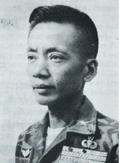

Khi nói về vụ mất Vùng 2 Chiến Thuật, mọi người thường bị lôi cuốn ngay tới việc mất Ban Mê Thuột và cuộc triệt thoái thất bại của Quân Đoàn II, khiến không còn kịp nhìn thấy nguyên nhân thật và duy nhất:
Vùng 2 Chiến Thuật mất chính bởi chủ trương rút bỏ Kon Tum và Pleiku!
Ban Mê Thuột được xử dụng làm cái cớ, Cuộc Triệt Thoái Quân Đoàn II trên Con Đường Số 7 chỉ là hậu quả phụ của chủ trương này.
Mất Ban Mê Thuột thì Vùng 2 mất 1 tỉnh. Nhưng mất Kon Tum – Pleiku thì không thể nào giữ được 2 tỉnh Phú Bổn – Phú Yên, và tiếp tới là Sư Đoàn 22 ở thành phố Qui Nhơn, tỉnh Bình Định vùng Duyên Hải bị vô hiệu hóa, bị cô lập. Đường chuyển quân về phía Nam đã bị cắt đứt. Giả sử như Quân Đoàn II rút quân về Nha Trang thành công, lực lượng vẫn nguyên vẹn, thì Vùng 2 Chiến Thuật có mất không? Câu trả lời là vẫn mất! Vì trong lúc đó, có ai – có cái gì bắt buộc Cộng Quân phải ngồi yên phòng thủ trong 3 thành phố Ban Mê Thuột, Pleiku, Kon Tum? Họ vẫn bung quân ra chiếm các tỉnh Phú Bổn, Phú Yên, và cắt ngang quốc gia Việt Nam Cộng Hòa tới tận bờ biển Đông. Khi toán quân đầu tiên của Quân Đoàn II rời bỏ Pleiku, phải coi như lúc đó thì Vùng 2 Chiến Thuật đã mất!
Không có một chiến thuật nào trên chiến trường có thể cứu vãn sai lầm chiến lược bỏ Kon Tum – Pleiku của Tổng Thống Nguyễn Văn Thiệu cả. Nhưng tất cả lỗi lầm trút lên một mình cá nhân Tổng Thống Thiệu thì không công bình. Tác giả muốn nói tới Bộ Tổng Tham Mưu quân đội Việt Nam Cộng Hòa, trú đóng tại thủ đô Sài Gòn. Mà đã nói tới thì phải nhắc lại “trở ngại” giữa Đại Tướng Cao Văn Viên và Tổng Thống Nguyễn Văn Thiệu. Người ta có thể cảm thông với sự bất mãn của Tướng Viên đối với Tổng Thống Thiệu vì ông Thiệu đã tước đi nhiệm vụ và quyền hạn của Bộ Tổng Tham Mưu mang về Dinh Độc Lập. Nhưng có lẽ ít ai, nhất là giới quân nhân, có thể cảm thông với Tướng Viên vì sự bất mãn này đã làm thiệt hại đến quân đội Việt Nam Cộng Hòa. Thái độ lơ là của vị Tướng Tổng Tham Mưu Trưởng đối với các đơn vị, với các chiến trường, là việc không thể chấp nhận được.
Trở lại thời gian trước khi quân Bắc Cộng tiến đánh Ban Mê Thuột. Quân Đoàn II chỉ có Sư Đoàn 23, 5 Liên Đoàn Biệt Động Quân, Lữ Đoàn 2 Kỵ Binh để phòng thủ Kon Tum – Pleiku, Ban Mê Thuột và Quảng Đức. Bốn tỉnh của Vùng Cao Nguyên mà chỉ có xem như 2 Sư Đoàn thì vấn đề cơ động lực lượng đối với Quân Đoàn II/ Vùng 2 CT là vô cùng quan trọng. Pleiku có đường 19 dẫn về bờ Biển Đông, thành phố Qui Nhơn, nơi có Sư Đoàn 22 đang trú đóng và các cơ sở Tiếp Vận cho vùng Kon Tum – Pleiku. Ban Mê Thuột cũng có đường 21 dẫn xuống Biển Đông, Thị Xã Ninh Hòa, Nha Trang, nơi đặt bản doanh Bộ Tư Lệnh Quân Khu II và các cơ sở Tiếp Vận cho hai tỉnh Ban Mê Thuột và Quảng Đức. Với quân số quá ít so với quân Bắc Cộng, Tướng Phú chọn cách dồn nhiều quân ở Pleiku, và dựa vào ưu thế Không Quân để kịp thời chuyển quân nhanh chóng về Ban Mê Thuột một khi nơi này có dấu hiệu sắp bị tấn công. Và như đã nói ở đoạn trước, tác giả không tin Tướng Phú lầm kế nghi binh mà chỉ vì phương tiện không vận như ông dự trù không còn nữa.
Trung Tá Trần Duy Hòe, Trưởng Phòng 2 của Tướng Tất, vài năm trước đã đề cập đến điều này khi nói chuyện với tác giả trên đài VOV, vùng Little Saigon.
Nói tóm tắt, Tướng Phú không chọn cách may rủi, ông quyết định phòng thủ vững chắc ở một đầu (Pleiku), và sẽ đổ quân sang cứu đầu kia (Ban Mê Thuột) kịp thời bằng phương tiện không vận. Phía quân Bắc Cộng có dùng kế nghi binh thật, nhưng nó chẳng ảnh hưởng gì đến quyết định dàn quân của Tướng Phú.
“Bàn Cờ” giữa Tướng Phạm Văn Phú và Tướng VC Văn Tiến Dũng được bày như sau:
Tướng VC Dũng ém dấu Sư Đoàn 320 CSBV trong khu vực cạnh đường 14 ở giữa Pleiku và Ban Mê Thuột, và sẽ dùng nó tiến về hướng Bắc hoặc hướng Nam tùy theo quyết định sẽ đánh Pleiku hay Ban Mê Thuột. Ông ta dùng Sư Đoàn 968 CSBV vừa xâm nhập mở ngay Mặt Trận Thanh An, Pleiku, giả như trận mở màn quyết chiếm lấy Pleiku để nghi binh. Đồng thời chờ Sư Đoàn 316 CSBV từ Miền Bắc đang bí mật di chuyển xuống khu vực phía Tây Ban Mê Thuột.
Tướng Phú không ngồi yên chờ đợi, ông đưa các toán trinh sát quần trong khu vực Buôn Hô, giữa Pleiku và Ban Mê Thuột, tìm dấu vết địch quân, hầu kịp thời phản ứng. Frank Snepp là một ngôi sao sáng trong bộ phận phân tích tình báo chiến trường của cơ sở CIA ở Sai Gòn. Sau chiến tranh Việt Nam, anh ta trở về Mỹ, từ chức khỏi cơ quan CIA để có thể viết cuốn sách nổi tiếng “Decent Interval” vào năm 1977, thuật lại về cuộc chiến. Frank Snepp viết trong “Decent Interval” một đoạn như sau:
“….By the afternoon of 8 March, ARVN troops operating out of Buon Ho, north of BanMeThuot. Were still conducting reconnaissance operations and Dung decided he could no longer risk their stumbling across his own units. Therefore, he ordered the 320 nd NVA pision to move at once against the section of Route 14 between Buon Ho and Pleiku. Within a few hours the road was cut and ARVN troops in the southern highland found themselves isolated from the rest of Phu’s army to the north.
It was then Phu saw the light. He immediately order yet anoter regiment to be airlifted from Pleiku to the Buon Ho – BanMeThuot sector. But only surveying his helicopter fleet he discovered that only one of his four giant CH–47s was in flyable condition. He anxiously petioned Sai Gon for replacements, but none was available. The Embassy briefly considered mobilizing several Air America choppers on his behaft, but gave up the idea out of diference of the provisions of the Paris agreement ruling out renewed US involvement in the war.”
Tác giả chuyển đoạn này sang Việt ngữ:
“…Vào xế trưa ngày 8 tháng Ba, các toán quân Việt Nam Cộng Hòa tiếp tục mở những cuộc hành quân thám sát trong khu vực Buôn Hô, phía Bắc Ban Mê Thuột, Tướng VC Văn Tiến Dũng bèn quyết định là không thể để xảy ra tình trạng những toán quân này có cơ hội hành quân xuyên qua các đơn vị của ông ta. Dũng bèn ra lệnh cho Sư Đoàn 320 CSBV lập tức tấn công cắt đứt đường 14 ở khoảng giữa Buôn Hô và Pleiku. Chỉ trong vài giờ, quân Việt Nam Cộng Hòa ở vùng Nam Cao Nguyên đã thấy mình bị ngăn hẳn ra với lực lượng Tướng Phạm Văn Phú đóng ở phía Bắc.
Bây giờ thì Tướng Phú đã nhìn thấy ánh sáng. Ông lập tức ra lệnh không vận một Trung Đoàn từ Pleiku xuống khu vực giữa Buôn Hô và Ban Mê Thuột. Nhưng rồi ông phát hiện ra là 4 chiếc Chinook khổng lồ CH-47 thuộc phi đoàn trực thăng của ông chỉ có một chiếc duy nhất có thể xử dụng được. Ông ta vội vã liên lạc với Sài Gòn xin gửi máy bay thay thế, nhưng câu trả lời là không có sẵn. Phía Tòa Đại Sứ Mỹ tỏ ý muốn dùng một số trực thăng của hãng Air America (của CIA ngụy trang) cho Tướng Phú xử dụng, nhưng rốt cuộc thì bỏ qua ý định này vì ngại vi phạm các điều khoản cấm của Hiệp Định Paris”.
Không thể không vận quân mình xuống giữa Buôn Hô và, tức ở ngay đàng sau Sư Đoàn 320 CSBV, ý định của Tướng Phú nhằm ngăn chặn không để Sư Đoàn này tiến về Ban Mê Thuột đã không thành hình.
Tác giả muốn dùng chuyện này để nêu thắc mắc về Bộ Tổng Tham Mưu do Đại Tướng Cao Văn Viên chỉ huy. Là tổ chức đầu não của quân đội Việt Nam Cộng Hòa, nhưng chỉ có thể trả lời ngắn gọn “ Không có sẵn ” rồi thôi, thì thật là đáng buồn. Sao không có sáng kiến gom Chinook CH-47 của 3 Vùng Chiến Thuật còn lại để tăng phái cho Vùng 2 đang có nhu cầu cấp bách? Cũng có thể xử dụng C-130 đáp xuống phi trường Phụng Dực, Ban Mê Thuột, sau đó khai triển đội hình bằng phương tiện khác. Hay chỉ có Tổng Thống Thiệu mới coi Ban Mê Thuột là quan yếu nhất Vùng 2 Chiến Thuật còn Bộ Tổng Tham Mưu của Tướng Viên thì không? Ngay chính Tòa Đại Sứ Mỹ cũng còn phải giả vờ, giả lả với câu chuyện “dỏm” muốn dùng trực thăng của hãng hàng không dân sự Air America rồi sau đó lấy Hiệp Định Paris ra viện cớ. Nói chuyện kiểu ….huề tiền.
Sau này, các tài liệu Hoa Kỳ dùng cuộc chiến Việt Nam làm thí dụ để huấn luyện Sĩ Quan Mỹ đa số đều chê trách phía Việt Nam Cộng Hòa đã không biết tận dụng ưu thế Không Quân của mình cho Vùng 2 lúc đó.Tại sao Bộ Tổng Tham Mưu đã không chịu tập họp sức mạnh Không Quân của cả 4 Vùng Chiến Thuật để đánh xuống quân Bắc Cộng?!
Câu hỏi của họ thật xác đáng? Không trả lời được, thật đáng buồn!
Và cũng xin nhắc lại một lần nữa về lực lượng Biệt Động Quân. Trong khi Ban Mê Thuột bị tấn công rồi thất thủ, Bộ Tổng Tham Mưu lần lượt gửi lên tăng phái cho Quân Đoàn II 3 Liên Đoàn Biệt Động Quân Tổng Trừ Bị riêng lẻ. Tại sao không thể có sáng kiến gom 3 Liên Đoàn này lại thành 1 Đại Đơn Vị với quân số ngang cấp Sư Đoàn, lập một Bộ Chỉ Huy nhẹ, thống nhất chỉ huy để lực lượng tăng phái này có khả năng nhận trách nhiệm tấn công hay phòng thủ ở cấp Sư Đoàn?
Trong cuộc họp ở Cam Ranh, chính Đại Tướng Viên đã dùng câu trả lời “Không còn quân tăng phái” để thúc Tổng Thống Thiệu đóng cây đinh cuối cùng lên 6 tấm ván có tên là “ Cuộc Triệt Thoái Quân Đoàn II”!
Vì lý do gì mà Đại Tướng Viên không biết lúc bấy giờ Biệt Động Quân đang còn 3 Liên Đoàn Tổng Trừ Bị sẵn sàng ứng chiến? Đại Tướng đã có thể mạnh mẽ trả lời “Có” với Tổng Thống vì sẽ dễ nhớ hơn, bởi tượng hình hơn, nếu từ sau Trận Mùa Hè Đỏ Lửa 1972, ông chịu khó thu xếp dù trong hoàn cảnh bị cắt giảm viện trợ để 6 Liên Đoàn Biệt Động Quân Tổng Trừ Bị trở thành 1 hay 2 Sư Đoàn Biệt Động Quân. Cùng lắm thì biến họ thành các Chiến đoàn hay Binh Đoàn vẫn có khả năng tham chiến cao hơn so với việc xử dụng từng Liên Đoàn lẻ tẻ gửi đi tăng phái.
Bất cứ lúc nào tác giả mang chuyện này ra hỏi, Tướng Tất đều trả lời với giọng nuối tiếc. Tướng Tất cho rằng nại cớ thiếu phương tiện yểm trợ để từ chối, trì hoãn thành lập các Sư Đoàn Biệt Động Quân là không chính đáng. Ông nêu thí dụ, quan trọng nhất trong tiến trình thành lập Sư Đoàn là lực lượng Pháo Binh Sư Đoàn. Nếu lúc đó phía Mỹ bị ngăn cấm bởi Hiệp Định "Không Hòa Bình" Paris nên Bộ Tổng Tham Mưu không có đủ súng lớn để thành hình lực lượng Pháo Binh cho những Sư Đoàn Biệt Động Quân, thì tại sao không nhớ rằng trước đây mỗi Pháo Đội chỉ có 4 khẩu pháo, sau mới tăng lên 6 khẩu? Chỉ cần cắt bớt từ 6 xuống trở lại 4 khẩu, 2 khẩu pháo lấy từ mỗi Pháo Đội dư để thành hình các Pháo Đội trong tiến trình thành lập các Sư Đoàn Biệt Động Quân!( Nhất là vào lúc này trên toàn quốc chúng ta đang phải hạn chế đạn pháo binh hàng ngày cho mỗi khẩu pháo vì bị cắt giảm viện trợ).
Nói chung, nếu các Sư Đoàn Biệt Động Quân được thành lập thiếu các đơn vị yểm trợ cơ hữu, thì khi họ được gửi tới Vùng Chiến Thuật nào, Vùng đó sẽ có bổn phận phải cung cấp bù vào sự thiếu thốn của họ cho tới khi cuộc hành quân chấm dứt.
Sau Hiệp Định “Không Hòa Bình” Paris 1973, Tổng Thống Thiệu tuyên bố từ đây Việt Nam Cộng Hòa phải “Đánh giặc theo kiểu con nhà nghèo”. Bộ Tham Mưu chắc là có nghe, nhưng đã không chịu khó nghiên cứu rồi đưa ra những sáng kiến đáp ứng lời kêu gọi của Tổng Thống. Lẽ nào Đại Tướng xem lời nói này của Tổng Thống là một lời nói khôi hài cho vui? Nguyên một Tổng Cục Chiến Tranh Chính Trị đồ sộ mà không tổ chức được những buổi hội thảo, học tập cho toàn quân các cấp để họ sẵn sàng chiến đấu quyết bảo vệ Miền Nam Tự Do trong khi không còn sự yểm trợ dồi dào của Mỹ như trước đây. Hình như Đại Tướng Viên chưa làm gì cả!
Tập tài liệu “The Fall of South Vietnam: An Analysis of The Campaigns” của bộ phận School of Advanced Military Studies thuộc trường United States Army Command and General Staff College có đoạn viết:
“Due to the South Vietnamese's leadership inability to learn, anticipate, and adapt, they endure a catastrophic defeat”.
Tác giả chuyển sang Việt ngữ:
“Vì giới lãnh đạo Nam Việt Nam không có khả năng học hỏi, tiên liệu, và thích ứng, nên họ phải cam chịu một cuộc thất trận thê thảm”.
Bị “kẻ ù té chạy” bỏ rơi mình chê trách nặng nề, đồng thời ca tụng đối phương hết lời, thì thật là đau quá! Mặc dầu tác giả vẫn biết, “kẻ ù té chạy ”kia luôn có nhu cầu làm như thế nhằm đánh bóng tô son cho cái danh dự không hề có của âm mưu đi đêm với Tầu Cộng, Việt Cộng, giao Miền Nam Tự Do cho Cộng Sản.
Về thái độ của người Mỹ sau Hiệp Định “Không Hòa Bình” Paris 1973, ngay từ đầu cuốn sách này tác giả đã trích dẫn ba câu tuyên bố của Ngoại trưởng Kissinger, Thượng Nghị Sĩ Kennedy, và Thượng Nghị Sĩ từng là Ứng Cử Viên Tổng Thống Mc Govern.
Mc Govern mơ giữa ban ngày “Sau khi quân Mỹ rút đi, Nam Việt Nam sẽ sụp đổ trong vòng 72 giờ đồng hồ”.Câu nói cho thấy người muốn trở thành Tổng Thống Hoa Kỳ chẳng hiểu gì về Cuộc Chiến Việt Nam! Cho dù bị cắt giảm viện trợ khiến tinh thần binh sĩ sa sút, quân đội Việt Nam Cộng Hòa vẫn tiếp tục chiến đấu dũng mãnh, không một thành phố hay tỉnh lỵ nào bị lọt vào tay Bắc Cộng cho đến Trận Phước Long cuối năm 1974. Phước Long chỉ mất vì Tổng Thống Thiệu muốn dùng nó để tìm hiểu phản ứng của người Mỹ. Ông Thiệu không chấp nhận đưa quân tới cứu Phước Long, chỉ để thấy phản ứng của người Mỹ là dăm ba câu hăm dọa suông đối với Bắc Cộng.
Kisinger thì chắc chắn rành rẽ hơn Mc Govern, hắn ta chính là đạo diễn của âm mưu giao Miền Nam Tự Do cho Tầu Cộng, Việt Cộng. Hắn than vãn “Tại sao chúng không chết phứt đi cho rồi. Điều tệ hại nhất là chúng cứ sống dai dẳng hoài ”. Kisinger phải tuôn ra một câu quá tồi tệ, hớ hênh, mặc dầu hắn đứng đầu ngành ngoại giao của siêu cường Hoa Kỳ vì hắn ta biết rằng quân đội Việt Nam Cộng Hòa không dễ dàng chịu khuất phục trước Cộng Sản theo sự dàn dựng quỷ quyệt của hắn. (Lúc này Tổng Thống Nixon đã ngậm ngùi giã biệt Tòa Bạch Ốc). Năm 1975 là thời điểm Nixon – Kissinger tính toán đã đủ để cho Việt Nam Cộng Hòa sụp đổ mà Hoa Kỳ không bị mang tiếng phản trắc, lừa gạt. Vì vậy Frank Snepp mới đặt tựa quyển sách của anh là “Decent Interval”, có nghĩa là " Khoảng Cách Thời Gian Hợp Lý”.
Còn theo Thượng Nghị Sĩ Kennedy thì: “Viện trợ chỉ kéo dài thêm chiến tranh”. Vậy chiến tranh sẽ chấm dứt nếu bên phía Việt Nam Cộng Hòa không còn nhận được viện trợ nữa. Khối Cộng Sản Quốc Tế vẫn tiếp tục viện trợ mạnh mẽ cho Miền Bắc Cộng Sản thì chiến tranh sẽ chấm dứt theo chiều hướng này.
Khoảng cách thời gian hợp lý là khoảng 2 năm, tính từ lúc Hiệp Định “Không Hòa Bình” Paris 1973 có hiệu lực (tháng Giêng 1973). Đến năm 1975 thì đã hơn 2 năm. Người Mỹ dàn dựng mọi chuyện nhằm cho sự tính toán của họ đạt được kết quả đúng thời hạn. Vậy thì, trong khi Quốc Hội Hoa Kỳ liên tục cắt giảm viện trợ Việt Nam Cộng Hòa, cơ quan DAO ở Sài Gòn do Tướng Murray cầm đầu cũng đệ trình tới Dinh Độc Lập một báo cáo ví von " Mất tiền cũng giống như mất đất”. Bản báo cáo của Tướng Murray viết rõ, được viện trợ 1.4 tỷ đô la thì giữ được tất cả lãnh thổ Việt Nam Cộng Hòa hiện có, nhưng nếu chỉ là 1.1 tỉ thì phải bỏ Vùng 1 Chiến Thuật, nếu là 900 triệu thì phải bỏ cả Vùng 1 và Vùng 2, còn nếu là dưới 600 triệu thì chỉ còn có thể giữ thủ đô Sài Gòn và Vùng 4 mà thôi.
Có thể nói, tiến trình cắt giảm viện trợ từ Quốc Hội Hoa Kỳ song song với báo cáo ví "mất tiền cũng giống như mất đất” của Tướng Murray là cách thúc đẩy rất hiệu quả cho sự hình thành chiến lược mới “Đầu Teo Đít To” từ Tổng Thống Nguyễn Văn Thiệu.
Nhưng từ thành hình chiến lược cho đến thi hành nó thì người Mỹ cũng sẽ.... phụ giúp cho Tổng Thống Thiệu!
Sự “phụ giúp” này được Quốc Hội Hoa Kỳ thể hiện ngày 10 tháng Ba qua biểu quyết không chấp thuận viện trợ bổ sung 300 triệu đô la cho Việt Nam Cộng Hòa. Phái đoàn cầu viện do Ngoại Trưởng Trần Văn Lắm cầm đầu từ Hoa Kỳ về còn cho biết thêm, có thể sẽ bị cúp hẳn viện trợ. Hai ngày sau, 12 tháng Ba, Đại Sứ Martin thông báo viện trợ cho năm tới sẽ không được chuẩn chi vào tháng Sáu 1975 nữa. Có nghĩa là viện trợ đã bị cúp hẳn rồi.
Được người Mỹ “phụ giúp” mạnh mẽ như vậy, ông Thiệu hết cách!
Đừng quên là trong cuốn “Decent Interval”, Frank Snepp đã thú nhận CIA cài được người nằm vùng ngay trong đầu não Đảng Cộng Sản Việt Nam ở Hà Nội. Vì thế Bắc Cộng lập Chiến Dịch Tây Nguyên khó lòng thoát khỏi con mắt của cơ quan tình báo Mỹ. Mục tiêu của Chiến Dịch là Ban Mê Thuột cũng vậy!
Có lẽ phía Mỹ đã không mấy hài lòng đối với Chiến Dịch này, phía Bắc Cộng chỉ dám dự trù (có thể) dứt điểm Miền Nam Tự Do vào năm 1976. Lúc này đầu não Cộng Sản ở Hà Nội vẫn chưa biết gì đến chiến lược “Đầu Teo Đít Teo” của ông Thiệu, nhưng không sao cả, nếu mục tiêu chiếm Ban Mê Thuột thành công thì họ sẽ biết ngay thôi. Chưa muộn!
Vậy, ông Đại Sứ Anh Quốc John Bushell bèn đáp xuống Kon Tum “thăm” Đại Tá Biệt Động Quân Phạm Duy Tất, Tư Lệnh Mặt Trận Kon Tum – Pleiku (cuối tháng Hai 1975).
Sau khi Việt Nam Cộng Hòa sụp đổ, ông John Bushell được thuyên chuyển sang Pakistan, một “ổ kiến lửa” khác đối với người Mỹ. Ông ta không phải là một ông Đại Sứ “bình thường”.
Cuộc viếng thăm quá đặc biệt, quá lạ thường của một ông Đại Sứ Anh với một Đại Tá Việt Nam Cộng Hòa (ông Tất lúc này chưa thăng cấp Tướng) tại mặt trận làm nẩy ra vài thắc mắc cho tác giả, và tác giả cũng đã cố gắng tự trả lời:
Tại sao thăm Kon Tum, tại sao gặp Đại Tá Tất?
Trả lời: Nếu Chiến Dịch Tây Nguyên của Bắc Cộng chọn mục tiêu tấn công là Kon Tum – Pleiku thì có lẽ ông Đại Sứ Anh John Bushell đã ghé thăm.... Ban Mê Thuột.
Đến Kon Tum tìm gặp Đại Tá Tất thay vì tìm gặp một vị Tư Lệnh khác là vì ai cũng biết mối thân tình giữa Đại Tá Tất và Thiếu Tướng Phú. Nội dung cuộc gặp gỡ chắc chắn sẽ được ông Tất báo cáo đầy đủ đến ông Phú. Và như vậy người Mỹ đạt được mục đích. Vì theo lời kể sau này của Tướng Tất với tác giả, cuộc gặp gỡ đã khiến ông có cảm tưởng người Mỹ muốn nói cho phía mình biết Kon Tum – Pleiku mới chính là mục tiêu của quân Bắc Cộng, và cũng nhắn nhủ xuyên qua ông Đại Sứ Anh rằng tuy hiện nay đạn dược – tiếp liệu ở Kon Tum – Pleiku có giới hạn nhưng trong tương lai khi trận chiến bùng nổ tại đây thì người Mỹ sẽ giải quyết ( chứ ông Đại Sứ Anh thì có cái gì trong tay mà hứa hẹn?).
Và nếu Vùng 2 có vụ Đại Sứ Anh, thì sau đó không lâu Vùng 1 có vụ Tổng Lãnh Sự Mỹ.
Dưới đây là vài đoạn trong một bài viết của Đại Tá Phạm Bá Hoa, Tham Mưu Trưởng Tổng Cục Tiếp Vận, viết về vụ ông Tổng Lãnh Sự Mỹ trong lúc Cuộc Triệt Thoái Quân Đoàn I đang xảy ra:
“Ngày 14/1/1995, tôi gặp anh Nguyễn Thành Trí trong chợ HongKong ở Houston, bạn tôi. Anh là cựu Đại Tá, Tư Lệnh Phó Sư Đoàn Thủy Quân Lục Chiến, và Sư Đoàn này đặt dưới quyền xử dụng dài hạn của Quân Đoàn I từ sau trận chiến Mùa Hè Đỏ Lửa năm 1972. Dưới đây là lời thuật lại của cựu Đại Tá Trí về những ngày cuối tháng 3/1975, trong lúc anh và bộ chỉ huy hành quân Sư Đoàn Thủy Quân Lục Chiến ở khu vực Non Nước, Đà Nẵng:
Khoảng 5 giờ chiều ngày 28 tháng 3 năm 1975, quân cộng sản tấn công vào Sư Đoàn 3 Bộ Binh ở sườn Tây Đà Nẵng, và chỉ vài giờ chống trả là Sư Đoàn rút lui, tạo khoảng trống bên sườn của Sư Đoàn Thủy Quân Lục Chiến, và các đơn vị co về bản doanh Sư Đoàn (Thủy Quân Lục Chiến). Tư Lệnh Phó Sư Đoàn Thủy Quân Lục Chiến, đã rời khỏi và lên chiến hạm của Hải Quân(Việt Nan) từ lúc chiều. Nhưng trước khi đi ông có đến gặp Trung Tướng Ngô Quang Trưởng xin quyết định vì tình hình rất nghiêm trọng, nhưng Trung Tướng Trưởng không nói gì cả. Lúc này bên cạnh Thiếu Tướng Bùi Thế Lân có ông Tổng Lãnh Sự Hoa Kỳ tại Đà Nẵng, ông ta có mang theo máy vô tuyến cầm tay loại nhỏ và chốc chốc ông ta nói vị trí của ông với ai ở đâu đó, tôi (tức cựu Đại Tá Trí) không rõ. Thiếu Tướng Bùi Thế Lân nói với tôi rằng: Ông Tổng Lãnh Sự khuyên ổng (tức Thiếu Tướng Lân) nên bảo toàn lực lượng, nhưng Thiếu Tướng Lân không nói điều này với Trung Tướng Trưởng.
.......
Với lời thuật lại trên đây của cựu Đại Tá Trí, tôi nghĩ rằng: rất có thể là các vị Tư Lệnh tại Quân Đoàn I từ binh chủng Bộ Binh, Nhẩy Dù, Thủy Quân Lục Chiến, đến quân chủng Hải Quân, Không Quân và cũng ngay cả Trung Tướng Ngô Quang Trưởng, Tư Lệnh Quân Đoàn I, đã nhận được lời khuyên “"bảo toàn lực lượng" như Thiếu Tướng Bùi Thế Lân đã nhận của ông Tổng Lãnh Sự Hoa Kỳ tại Đà Nẵng cũng nên? Không chừng chiến hạm vào gần bờ để đón Thủy Quân Lục Chiến cũng từ "lời khuyên" của ông Tổng Lãnh Sự nữa chăng! Vì rõ ràng là cựu Đại Tá không hề biết luật xuất phát từ đâu mà. Và phải chăng với "“lời khuyên" đó đã dẫn đến các vị có quân có quyền trong tay lần lượt rời khỏi đơn vị hoặc chỉ huy đơn vị triệt thoái? Điều này tôi không rõ, nhưng có điều quý vị đều rõ là Bộ Tư Lệnh Quân Đoàn I và Đà Nẵng vào tay quân cộng sản quá dễ như khi vào Bộ Tư Lệnh Quân Đoàn II ở Pleiku vậy! ”
“Lời hứa ” của ông Đại Sứ Anh ở Vùng 2. “Lời khuyên ” của ông Tổng Lãnh Sự Mỹ ở Vùng 1. Thật trùng hợp! “Lời khuyên” của ông Tổng Lãnh Sự Mỹ cho Tướng Tư Lệnh Thủy Quân Lục Chiến Bùi Thế Lân "hãy bảo toàn lực lượng” không có nghĩa gì khác hơn là đừng đánh trả, ngăn chặn quân Bắc Cộng nữa. Hãy bỏ chạy! Tác giả cũng rất đồng ý với nghi vấn Đại Tá Phạm Bá Hoa đã nêu: Có thể các vị Tư Lệnh khác thuộc Quân Đoàn I cũng đã nhận được “lời khuyên” này.
Tuy vậy tác giả cũng có thắc mắc, và cũng đã tự trả lời:
–– Tại sao lại phải chịu khó xử dụng một nhà ngoại giao Anh ở Vùng 2 mà không là người Mỹ như ở Vùng 1?
Trả lời: Trận Ban Mê Thuột là cái cớ then chốt đẩy tới 2 cuộc triệt thoái, cần phải tinh vi, tỉ mỉ, hành động cẩn thận để tránh sai sót. Nhưng khi Cuộc Triệt Thoái Quân Đoàn I đã và đang diễn ra thì đâu còn cần tránh sự sỗ sàng nữa! Đó là cách hành động của người Mỹ lúc bấy giờ!
Chịu đi sâu vào vấn đề tình báo ở Vùng 2 lúc đó thì còn nhiều nghi vấn khác nữa.
Sư Đoàn 968 CSBV từ Miền Bắc chuyển quân vào vùng Tây Nguyên Việt Nam bằng quân xa, Tình báo Mỹ đã cho tin tức quá đầy đủ nên đã bị Không Thám Việt khám phá, sau đó bị phi cơ oanh tạc của Việt Nam Cộng Hòa không tập cho tả tơi. Nhưng khi Sư Đoàn 316 CSBV từ Nghệ Tĩnh chuyển quân xuống phía Tây Ban Mê Thuột cũng bằng một đoàn quân xa dài ngoằng thì Tình Báo Mỹ hoàn toàn không biết gì hết! Tại sao có sự khác biệt này? Rất tiếc, trong cuốn “Decent Interval” cựu chuyên viên phân tích tình báo chiến trường CIA Frank Snepp tuy công nhận lỗi lầm nhưng đã không nêu ra lý do.
Điều đáng tiếc nhất là những tin tình báo do Đại Tá Trịnh Tiếu, Truởng Phòng 2 Quân Đoàn II thu thập được. Sau này nó mới được coi là chính xác, nhưng lúc đó người Mỹ kết luận không thể tin được, và vì vậy lúc đó Đại Tá Tiếu (vì sợ trách nhiệm) đã không dám tự mình quả quyết về mục tiêu thật sự của quân Bắc Cộng, trái ngược với lời kể sau này của ông ở hải ngoại. (đã chứng minh ở đoạn đầu sách).
Frank Snepp viết:
“In the midst of my labors, General Timmes dropped by my ofice and reminded me of the recent report from the defector pointing to the shift ỏ the 320th NDA pision from Pleiku to Ban Me Thuot. I was, of course, intrigued and troubled by it, but like General Phu and his analysts, I finally dimissed it as false, principally because of the recurring radio intercepts that seemed to place the 320th in its normal operating area in Pleiku to the north. Unfortunately, all of us in the analytical business in Saigon had come to rely excessively on such electronically obtained intelligence, in lieu of human-source data, in fast-moving crisis situations. As I drew up my conclusions I thus ignored the one real clue to North Vietnamese plans. I then did what an intelligence analyst can do at great hazard: I guess at the adversary's intensions, and was dead wrong.
I was not alone, however. Assessments prepared by DAO and by my CIA colleagues back home also continued to focus on the traditional “threat areas” of KonTum and Pleiku Provinces, while glossing over Ban Me Thuot altogether”.
Tác giả chuyển sang Việt ngữ:
“Trong khi tôi đang bù đầu với công việc, thì Tướng Timmes tạt qua văn phòng, nhắc nhở về việc một tù binh khai rằng Sư Đoàn 320 VC đang di chuyển từ Pleiku về Ban Mê Thuột. Tôi cũng đang thấy có vấn đề về việc này, nhưng cũng như Tướng Phú và các chuyên viên phân tích tình báo của ông ta, cuối cùng tôi đã kết luận khai bịa đặt, vì lúc bấy giờ qua dọ thám truyền tin, điện đàm, thì Sư Đoàn 320 vẫn đang hoạt động bình thường ở Pleiku và về hướng Bắc. Thật là không may mắn tất cả chúng tôi trong công việc phân tích ở Sài Gòn đã tin vào máy móc do thám, bỏ qua nguồn tin của con người đưa tới, trong lúc tình hình biến chuyển xấu và dồn dập tới. Tôi tiếp tục phân tích theo chiều hướng bỏ qua dữ kiện có thật dính dấp tới các kế hoạch của Bắc Việt. Rôi thì tôi đã làm cái mà một chuyên viên phân tích tình báo vẫn làm với đầy may rủi: Suy đoán dự tính của địch, và tôi đã lầm chết người.
Nhưng không chỉ riêng tôi, cơ quan DAO và các đồng nghiệp của tôi ở bên Mỹ cũng tiếp tục coi Kon Tum, Pleiku là khu vực đang bị địch đe dọa mà không chú ý gì đến Ban Mê Thuột cả”.
Sự sai lầm mà Frank Snepp đã kể lại với giọng văn đầy ân hận, mỉa mai thay lại rất phù hợp với “lời hứa” của ông Đại Sứ Anh với Chuẩn Tướng Phạm Duy Tất tại Kon Tum vào cuối tháng Hai 1975!
Tác giả có thể bị kết án là đã đổ lỗi cho người Mỹ mà không đưa ra được một chứng cớ cụ thể. Những người kết án có thể cho rằng “lời hứa” của ông Đại Sứ Anh chỉ là một lời nói xã giao, an ủi cho qua chuyện trong khi tình hình chiến sự bắt đầu sôi sục. Vâng, cũng cò thể là vậy, tuy nhiên, đừng quên rằng từ khi người Mỹ đặt chân tới Miền Nam Tự Do, họ luôn luôn mượn tay cấp lãnh đạo người Việt thay họ thực hiện những điều xấu xa do chính họ chủ trương. Bằng các thủ đoạn dụ dỗ, hăm dọa, lừa gạt! Năm 1963 nếu Chính Phủ Kennedy không hứa hẹn sẽ tiếp tục viện trợ sau khi Tổng Thống Ngô Đình Diệm bị lật đổ, thì sẽ có cuộc đảo chánh ngày 01-11-1963, đưa đến cái chết thảm của anh em cụ Diệm. Hiệp Định Paris 1973 sẽ không thành hình nếu Chính Phủ Nixon không hăm dọa Tổng Thống Nguyễn Văn Thiệu năm 1975, họ đã dùng viện trợ gây áp lực nặng nề, rồi đã lừa, cuối cùng ông Thiệu lọt bẫy.
Nói vậy nhưng không có nghĩa là phủ nhận rằng ông Thiệu hay các cấp lãnh đạo cao nhất của Việt Nam Cộng Hòa không có lỗi lầm. Nhưng tác giả chưa hề nghĩ tới việc Tổng Thống Nguyễn Văn Thiệu cam tâm hãm hại quốc gia Việt Nam Cộng Hòa. Không! Ông ấy đã cố sức song song với những lầm lỗi của mình. Những vị lãnh đạo cao cấp quân sự khác cũng vậy, họ nhắm mắt để Tổng Thống Thiệu dấn sâu vào sai lầm chẳng qua là có thể vì họ mơ mộng sẽ được thay thế ông Thiệu, điều hành quốc gia một cách hữu hiệu hơn. Nên họ cũng lọt bẫy!
Về chứng cớ cụ thể, thì xin nhắc vụ ám sát Kennedy. Không ngoa đâu nếu nói rằng đó chính là một cuộc hành quyết công khai. Vâng, nói nghe nặng quá, nhưng đó chính xác là một vụ hành quyết, xử tử! Tổng Thống Kennedy đã bị hành quyết bằng nhiều phát súng giữa ban ngày, trong khi đoàn xe của ông di chuyển giữa thành phố Dallas, Texas; với đông đảo dân chúng đứng hai bên đường chứng kiến. Quang cảnh thật không khác gì một cuộc hành quyết thời Trung Cổ! Quá sức tệ hại, vậy mà đã bao nhiêu năm tháng trôi qua, bao nhiêu cuộc điều tra được thực hiện, nhưng mãi tới hôm nay những kẻ đứng đàng sau cuộc hành quyết công khai một ông Tổng Thống Mỹ là ai, dân chúng Mỹ vẫn chưa được biết.
Vậy thì việc đòi hỏi chứng cớ cụ thể về việc quân đội Việt Nam Cộng Hòa là một đạo quân bị ám sát (tức buộc họ phải thua trên chiến trường thay vì phải buông súng đầu hàng lúc đạn dược – tiếp liệu đã cạn), đến bao giờ mới có thể được đáp ứng?
Cuộc họp Cam Ranh ngày 13 tháng Ba 1975 giới hạn người tham dự, cấp chỉ huy ở Quân Khu 2 chỉ có Thiếu Tướng Tư Lệnh Quân Đoàn II, các Tướng Tá thuộc cấp sau đó chỉ được biết qua lời ông kể, hoặc xuyên qua những lệnh lạc của Tổng Thống do ông chuyển lại. nhưng không biết Frank Snepp có nguồn tin từ đâu mà đã viết như vầy:
“before returning to Pleiku, Phu conferred briefly with Vien's chief of operations. As a basic tactical guide they decided to rely on a little-known contigency plan for a logistics drawdown in the highland, which had been lying around the headquarters of the Joint General Staff in Saigon for months. The document seemed adaptable and adequate to Phu's new mission, except in one particular: it allowed for six months of preparation prior to the start of the operation.
Phu did not feel he had that long”.
Tác giả chuyển sang Việt ngữ:
“ Trước khi trở về Pleiku, Tướng Phú có cuộc họp nhanh với Trưởng Phòng Hành Quân của Tướng Viên. Trên phương diện chiến thuật căn bản, họ đồng ý dựa vào một kế hoạch ngẫu nhiên được soạn sẵn nhằm đối phó với một biến cố giả thuyết cho vùng cao nguyên, đã có tại Bộ Tổng Tham Mưu trong nhiều tháng qua, và ít người biết tới. Nó thích hợp và có thể áp dụng cho nhiệm vụ mới của Phú, chỉ trừ một điều: Kế hoạch này dành 6 tháng chuẩn bị trước cho cuộc rút quân.
Tướng Phú biết mình không có thời gian dài như vậy”.
Hiện tại thì rất khó kiểm chứng để biết có "cuộc họp nhanh" như trên hay không, và có phải Tướng Phú đã xử dụng kế hoạch nói trên cho Cuộc Triệt Thoái Quân Đoàn II hay không? Tuy nhiên, điều đáng chú ý là nếu đúng như vậy, thì một cuộc hành quân phải chuẩn bị trước 6 tháng, đã chỉ được chuẩn bị trong.... 3 ngày.
Tệ hại hơn nữa là việc không có Lệnh Hành Quân. Dĩ nhiên, nguyên nhân vì chỉ có được 3 ngày chuẩn bị. Lẽ ra Tướng Phú phải buộc Đại Tá Tham Mưu Trưởng Lê Khắc Lý dù thiếu thì giờ hay do vì phải giữ bí mật tuyệt đối, vẫn phải soạn cho bằng được một Lệnh Hành Quân giản lược. Thiếu nó, Cuộc Triệt Thoái Quân Đoàn II không có được sự phối trí và phân nhiệm rõ ràng. Thiếu nó, khi biến cố xảy tới thì hệ thống chỉ huy được phân nhiệm bằng lệnh miệng đó đã nhanh chóng bị vô hiệu hóa. Ngày 17 tháng Ba Tướng Tất liên lạc không được với Liên Đoàn 7 Biệt Động Quân, cho người đến tận nơi tìm thì mới biết Liên Đoàn đã rút đi theo lệnh Tướng Cẩm, là một chứng minh đầu tiên.
Và đây là một cuộc rút lui mà binh sĩ được lệnh giới hạn đạn dược mang theo, tinh thần của họ không phải là được chuẩn bị để tác chiến với quân Bắc Cộng. Thật ra, cho dù là như vậy, Cuộc Triệt Thoái Quân Đoàn II vẫn có cơ hội thành công nếu đoàn quân triệt thoái không ngừng lại ở Cheo Reo quá lâu, và ở Sông Ba sau khi phác giác cát lún, xe không qua được thì đòan quân phải chờ tới 3 ngày Công Binh mới câu vĩ sắt PSP tới lót lên dòng sông cạn nước.
Một lý do khác hết sức quan trọng mà Chuẩn Tướng Phạm Duy Tất đã kể trong phần phỏng vấn ông, là sự phân vân bất ngờ của Thiếu Tướng Phạm Văn Phú là không biết nên bỏ hay giữ Cheo Reo vì lệnh lạc lập lờ của Tổng Thống Thiệu. Tuy chỉ là sự phân vân, không phải lệnh, nhưng đã khiến các cấp chỉ huy tại chiến trường phân vân theo, không muốn đưa đơn vị lên đường để rồi có thể bị buộc phải chuyển quân đi ngược trở lại. Tình hình lúc này còn đang yên tĩnh.
Nhưng khi địch pháo xuống Cheo Reo đồng thời Sư Đoàn 320 CSBV ùa tới vào chiều tối 18 tháng Ba, Tướng Phú đã lập tức ra lệnh cho Không Quân thả bom tiêu hủy các chiến cụ nặng để khỏi bị lọt vào tay quân Bắc Cộng, trước đó lại yêu cầu Tướng Tất đưa Tướng Cẩm và Bộ Chỉ Huy về Tuy Hòa, khiến cả đoàn quân rút lui mất tinh thần. Binh sĩ tin rằng Quân Đoàn đã quyết định chạy chứ không đánh nữa. Không Quân đánh bom lầm vào 1 Tiểu Đoàn của Liên Đoàn 7 Biệt Động Quân cũng góp thêm phần sa sút tinh thần của các đơn vị. Chính vì vậy Đại Tá Nguyễn Văn Đồng đã bị địch bắt ngay trong đêm 18. Chính vì vậy Liên Đoàn 23 Biệt Động Quân thiện chiến của Đại Tá Lê Tất Biên đã tan rã chỉ trong một đêm và từ đầu đến cuối trận đụng độ không liên lạc được với Lữ Đoàn 2 Kỵ Binh. Chính vì vậy khi trực thăng của Tướng Tất từ Tuy Hòa quay trở lại Cheo Reo thì ông không còn liên lạc được đoàn quân phía dưới. Về các đơn vị vừa thoát khỏi Cheo Reo, họ im lặng vô tuyến vì không muốn nhận lệnh trở lại tham chiến. Nhưng khi cần thiết thì họ mới chịu liên lạc, như trường hợp một vị Trung Úy Đại Đội Trưởng đã kêu cho Tướng Tất, xin đáp xuống rước người vợ sắp sanh của anh.
Trận Cheo Reo coi như kết thúc vào trưa ngày 19 tháng Ba. Một phần của đoàn quân triệt thoái đã tan rã, số còn lại gồm cả quân và dân tháo chạy về Sông Ba để rồi lại bị kẹt cứng ở đó vì nạn cát lún trên dòng sông cạn.
Nếu đoàn quân thứ nhì rồi khỏi Pleiku không dừng lại quá lâu ở Cheo Reo, ngoại trừ các đơn vị có trách nhiệm là Lữ Đoàn 2 Kỵ Binh cùng Liên Đoàn 23 Biệt Động Quân. Nếu đừng có chuyện Tướng Phú nửa chừng phân vân về lệnh của Tổng Thống Thiệu rút bỏ nhưng bỏ tới đâu. Thì trận Cheo Reo đã có thể đã khác đi. Theo tác giả, vào lúc ra lệnh cho Không Quân thả bom phá bỏ chiến cụ nặng đồng thời đưa Chuẩn Tướng Cẩm – Đại Tá Lý về Tuy Hòa, là Tướng Phú đã ra dấu hiệu cho các đơn vị ở Cheo Reo toàn quyền tìm đường rút lui dựa theo sự nhận định tại chỗ của từng đơn vị trưởng.
Tại Sông Ba, tuy là lỗi của Công Binh đã không thám sát kỹ càng và không phản ứng kịp thời đối với sự cố cát lún trên lòng sông cạn, nhưng cũng không thể chối bỏ trách nhiệm liên đới của Tướng Phú, trong tư cách Tư Lệnh Quân Đoàn. Đúng ra Tướng Phú đã phải chỉ thị cho Tướng Cẩm hoặc Tướng Tất hay Đại Tá Lý đi thám sát cẩn thận suốt con đường số 7 trước, thì sẽ không xẩy ra việc đáng tiếc ở Sông Ba.
Dựa vào lời kể của Tướng Tất, tác giả thấy rằng những hoạt động của lực lượng triệt thoái ở Sông Ba là tùy vào sáng kiến của từng đơn vị trưởng. Không ai đoan chắc có bao nhiêu dơn vị ở đó, và là những đơn vị nào. Phía trên không liên lạc được với phía dưới đất là do phía dưới chủ động. Tướng Tất bay phía trên liên lạc được với Chiến Đoàn Lôi Hổ của Thiếu Tá Minh, còn gọi là Minh Đen cùng với Tiểu Đoàn Pháo Phòng Không của Quân Đoàn II, Tướng Tất đã dùng không yểm cho các đơn vị này về đến Tuy Hòa an toàn. Sau này Thiếu Tá Minh đã báo cáo với Bộ Tổng Tham Mưu vị chỉ huy bay ở trên yểm trợ cho quân mình là Tướng Phú thay vì thật sự đó là Tướng Tất với danh hiệu truyền tin là Trường An mà Thiếu Tá Minh đã liên lạc được.
Tiếp theo, Tướng Tất liên lạc được với Tiểu Đoàn 34 Biệt Động Quân của Thiếu Tá Trịnh Trân có 1 Chi Đoàn M113 tăng phái là cũng do... tình cờ họ gọi máy cho ông. Đây là một “tình cờ tốt đẹp", vì sau đó Thiếu Tá Trịnh Trân đã tuân lệnh Tướng Tất dẫn Biệt Động Quân và Thiết Kỵ tấn công lên ngọn đồi gần đó tiêu diệt một cụm cứ điểm mạnh của Việt Cộng đang liên tục pháo xuống đoàn quân Quân Đoàn II. Với thực tế lúc đó, tuân lệnh chỉ là tình nguyện hơn là bị bó buộc, nếu Thiếu Tá Trịnh Trân không tuân lệnh, thì đó sẽ chỉ là một “tình cờ xấu" mà thôi.
Lỗi lầm chiến lược bỏ Pleiku - KonTum của Tổng Thống Thiệu khiến cả Vùng 2 lọt vào tay địch. Lỗi lầm chiến thuật của Tướng Phú khiến Cuộc Triệt Thoái Quân Đoàn II thất bại. Đa số vẫn lầm lộn giữa trách nhiệm làm mất Vùng 2 Chiến Thuật và trách nhiệm khiến Cuộc Triệt Thoái Quân Đoàn II thất bại. Chính Tổng Thống Thiệu sau này tại Sài Gòn cũng đã lợi dụng sự lầm lộn này để đổ hết tội lên Thiếu Tướng Phạm Văn Phú.
Những người sau này phê phán rằng Thiếu Tướng Phạm Văn Phú chỉ có khả năng đủ “nắm" Sư Đoàn, không thể làm Tư Lệnh Quân Đoàn được, là đã phê phán quá nặng nề và hiểu rất sai về Tướng Phú. Tác giả mạnh mẽ tin tưởng rằng TướngPhú không phải là một chỉ huy thích dựa vào may rủi!
Khi Tổng Thống Thiệu cho ông tự do quyết định trong Trận Ban Mê Thuột, để đối đầu với Tướng Việt Cộng Văn Tiến Dũng có quá nhiều quân trong tay với khả năng mở 2 mặt trận cùng một lúc, Tướng Phú đã không chấp nhận may rủi mà thủ chắc ở một đầu phía Bắc (Pleiku) với kế hoạch dự trù hành quân bằng không vận giải cứu nếu Ban Mê Thuột bị tấn công. Chỉ tiếc là tới lúc đó thì phương tiện đã không còn nữa.
Nhưng khi Tổng Thống Thiệu tự mình quyết định cả Quân Đoàn II phải rút bỏ Kontum – Pleiku kèm theo lời hăm dọa cách chức và bỏ tù nếu ông không nghiêm chỉnh thi hành lệnh thì Tướng Phú đành chịu chấp nhận một cuộc hành quân dựa vào hai yếu tố “bất ngờ" và “rút nhanh" đầy may rủi. Tác giả tin rằng hai điều vừa nêu đã đủ để cho những người kia suy nghĩ lại.
Trước khi viết đoạn sau đây, về riêng cá nhân Chuẩn Tướng Phạm Duy Tất, tác giả đoán biết trước vì bản thân từng là Tùy Viên của Tướng Tất nên rồi đây sẽ có một số người cho rằng tác giả không thể giữ cho ngòi bút khỏi nghiêng ngả. Cũng... hơi hơi đúng, nếu không có chuyện Tướng Phú đã bị chính những thuộc cấp trực tiếp viết bài đã phá ông sau này ở hải ngoại với cùng đề tài của cuốn sách này.
Tại sao hầu hết các bài, các sách đều nói rằng Chuẩn Tướng Phạm Duy Tất là vị “ổng Chỉ Huy" hay đã “chỉ huy tổng quát" Cuộc Triệt Thoái Quân Đoàn II?
Theo hệ thống quân giai của Quân Đội Việt Nam Cộng Hòa, làm sao một tân Chuẩn Tướng lại có thể được chỉ định “chỉ huy tổng quát" một cuộc hành quân có sự hiện diện của một vị Chuẩn Tướng thâm niên hơn, nắm giữ chức vụ Tư Lệnh Phó Quân Đoàn cao hơn, đó là Chuẩn Tướng Trần Văn Cẩm?
Phía Bắc Cộng đã phổ biến lời khai của Chuẩn Tướng Trần Văn Cẩm như sau:
“Tướng Phú đòi buộc phải thực hiện cuộc triệt thoái nội trong 3 ngày kể từ ngày hôm sau. Ông và bộ tham mưu quân đoàn sẽ bay xuống Nha Trang để thiết lập bộ Tư lệnh tiền phương ngõ hầu điều nghiên kế hoạch đánh chiếm lại Ban Mê Thuột. Đoàn quân còn lại đặt dưới quyền chỉ huy của tôi và sẽ dùng đường bộ để rút lui ngày N.Cánh quân thứ nhất gồm ba Liên đoàn Biệt Động Quân, một trung đoàn Thiết Giáp, một nhóm Công binh. Trách vụ của toán quân này là bảo vệ Phú Bổn và xây đắp con đường từ Phú Bổn đến Tuy Hòa. Cánh quân thứ hai gồm phần còn lại của bộ chỉ huy Quân đoàn, ba Tiểu đoàn Pháo binh, Trung đoàn 21 Thiết Giáp trang bị toàn chiến xa M-48, hai đại đội cơ giới, và bộ binh. Cánh quân thứ ba gồm ba Liên đoàn Biệt động quân, một trung đoàn Thiết giáp, và Pháo binh yểm trợ. Không quân có kế hoạch riêng”.
Đúng theo lời khai của Tướng Cẩm, thì Tổng Chỉ Huy là Tướng Tư Lệnh Quân Đoàn II Phạm Văn Phú, Chỉ Huy Tổng Quát cuộc triệt thoái là Tướng Tư Lệnh Phó Quân Đoàn Trần Văn Cẩm, và Chỉ Huy đoàn quân cuối cùng rời Pleiku là Tướng Chỉ Huy Trưởng Biệt Động Quân Quân Khu 2 Phạm Duy Tất.
Tướng Tất đã chấp nhận sự hiểu lầm này suốt 39 năm liền.
Còn đau hơn nữa cho là nhà báo Tây Pierre Darcourt đã thản nhiên kể như thật trong cuốn “Vietnam, Qu'as Tu Fait De Tes Fils? ” một đoạn đầy hoang tưởng về cái gọi là “cuộc nói chuyện giữa Thiếu Tướng Nguyễn Khoa Nam và Pierre Darcourt”. Tác giả thú thực là chưa đọc nguyên tác của Pierre Darcourt mà chỉ đọc cuốn do ông Dương Hiếu Nghĩa dịch ra Việt ngữ với tựa “Mẹ Việt Nam ơi, Dân Ta Có Tội Tình Gì? ”, như sau:
– Anh giải thích thế nào về sự sụp đổ đã xảy ra ở Miền Trung?
Tướng Nam chống tay lên thành ghế ông đang ngồi, và bực tức cằn nhằn:
– Có rất nhiều lý do. Mà đầu tiên và trước hết là do ông Thiệu.
– Ở Tổng Tham Mưu Đại Tá Khôi nói với tôi người chịu trách nhiệm là Thiếu Tướng Phú.
– Không phải. Anh đã biết Tướng Phú còn hơn tôi nữa mà. Ông là một cấp chỉ huy có khả năng, bám trận địa như con rận bám sát tóc vậy.
Không, ông không phải là loại người chuồn đi, bỏ lại cả một thành phố và toàn bộ chiến cụ nguyên vẹn như vậy.Trước khi đổ vấy trách nhiệm cho cấp chỉ huy và cho lỗi lầm chính trị, có vài điểm kỹ thuật cần làm sáng tỏ: cuộc tổng tấn công của Bắc Cộng vào Vùng Cao nguyên đã được chờ đợi từ nhiều tuần lễ rồi. Nhưng vì thiếu tin tức chính xác về những cuộc điều quân hay di chuyển của các đơn vị cộng sản Bắc Việt xuyên qua rừng rậm, Tướng Phú nghĩ cũng đúng là nỗ lực chính của Cộng quân là phải nhắm vào Kontum hay Pleiku, nằm ngay ở phía Bắc, và ông ta đã tập trung phần lớn lực lượng vào hai thành phố này. Xui cho ông, Bắc Việt lại tấn công vào Ban Mê Thuột, nơi mà quân trú phòng chỉ có một trung đoàn và vài Liên đoàn Biệt Động Quân mà phải đương đầu với cả 3 sư đoàn Cộng sản! Sau đó cộng sản cắt hết các con đường giao thông chính trên Cao Nguyên. Phản ứng đầu tiên của Tướng Phú là phản công. Ông ta cho trực thăng vận 300 binh sĩ Dù và một Liên đoàn Biệt Động Quân đổ xuống chiếm lại hai phi trường ở Ban Mê Thuột, và sau đó đã cố gắng vào được thành phố và tảo thanh thị trấn. Trong một vài giờ, Ban Mê Thuột đã biết được một không khí thật sự vui mừng, một cái gì mường tượng như lúc thủ đô Ba Lê được giải phóng. Dân chúng vẫy cờ hoan hô các binh sĩ của Chánh Phủ. Các chủ vườn cao su đem rượu cỏ nhác ra uống mừng chiến thắng. Nhưng sau đó, đùng một cái, theo lệnh từ Sài Gòn chuyển lên, lực lượng Miền Nam được lệnh rời thành phố. Hai sư đoàn Bắc Việt khép kín họ lại và đã tiêu diệt họ.
Còn ở Kontum và Pleiku: còn 2 trung đoàn thuộc Sư đoàn 23 Bộ binh. Pleiku là một căn cứ Không quân quan trọng của một Sư đoàn Không quân, không thiếu một thứ gì từ lương thực đến đạn dược. Tướng Phú đã quyết định đánh và kháng cự. Ông ta đã xác định với các sĩ quan của ông như vậy. Tuy nhiên ngày 14 tháng 3, Tổng Thống Thiệu gọi ông về Cam Ranh và cho lệnh ông phải lui quân. Bây giờ chúng tôi biết được là cuộc bàn cãi rất là sôi động đầy sóng gió. Tướng Phú đã từ chối không thi hành lệnh. Ông ta đã nói thẳng với Tổng Thống Thiệu: “Tôi đã đáng giặc đã 23 năm rồi, và tôi chưa bao giờ biết lui quân. Hãy tìm một người khác để chỉ huy “cuộc chạy trốn này". Nói xong ông vứt khẩu súng lục của ông trên bàn và ra khỏi phòng họp, đóng sầm cửa lại. Và sau đó ông bay về Nha Trang, khai bệnh vào nằm bệnh viện. Chuyện đâu có khó khăn gì với ta đâu, vì anh cũng biết là ông ta luôn luôn bị khó chịu với hai lá phổi của ông.
– Đại Tá Khôi lại xác định với tôi là Tướng Phú đã bay về Pleiku và đã ra lệnh triệt thoái vài giờ sau đó.
– Đó là luận thuyết chính thức. Bộ Tổng Tham Mưu quả quyết là khi về đến Pleiku, Tướng Phú đã nói với Tư Lệnh phó của ông “tôi cho ông hay một bí mật lớn, là chúng ta sẽ phải sớm di tản hết các vị trí của chúng ta". Vị tư lệnh phó này lập tức báo tin cho các sĩ quan, và cuộc triệt thoái được thi hành ngay lúc đó. Tôi đã gặp Tướng Phú ở Sài Gòn ngày hôm kia, ông ta đã xác nhận với tôi là ông ta đã không bao giờ ra lệnh triệt thoái.
Dù sao thì giải pháp tốt đẹp duy nhất là nên giao cho Tướng Phú một nhiệm vụ hy sinh bằng cách cho lệnh ông phải tử thủ tại chỗ để bảo vệ Pleiku, nhằm mục đích mua thời gian và để cho dân chúng và các Liên đoàn Biệt Động Quân rút đi trong vòng trật tự, như thế thì mới tránh được cái dịch hốt hoảng đã đầu độc cả nước.
– Như vậy thì ai ra người ra lệnh triệt thoái?
– Chính là ông Thiệu. Sau khi Tướng Phú đã từ chối không thi hành lệnh, Tổng Thống Thiệu đã báo động cho Đại Tá Tất, tư lệnh phó của ông Phú, một sĩ quan Biệt Động Quân và giao cho ông này chức vụ Tư lệnh Vùng.
Được Tổng Thống liên lạc thẳng, Tướng Tất đã sốt sắng thi hành lệnh, và cho bắt đầu ngay cuộc hành quân triệt thoái, mà không cho tiến hành phá hủy một kho tàng nào. Anh ta đã để lại nguyên vẹn sáu tháng lương thực, một nửa các khẩu pháo và nặng nhất là để nguyên lại 40 chiếc phi cơ và trực thăng còn tốt. Tổng Thống Thiệu đã phạm một lỗi về xét đoán nhân sự không thể nói được khi ông giao quyền chỉ huy cho Đại Tá Tất. Tôi biết anh này quá nhiều, ông ta là một sĩ quan can đảm, một chuyên về tác chiến lưu động, đột kích hay phá hoại, nhưng anh ta không được đào tạo hay huấn luyện một tí gì để có thể hướng dẫn một cuộc hành quân loại triệt thoái rất tế nhị và quan trọng nầy.
Tổng Thống Thiệu cũng phải gánh hoàn toàn trách nhiệm trong việc bỏ thành phố Huế và Vùng I Chiến Thuật. Tướng Trưởng có ba Sư đoàn ưu tú để lo phòng thủ Vùng nầy, Sư đoàn 1 Bộ binh, Sư đoàn Thủy Quân Lục Chiến, và Sư đoàn Dù. Nhưng ngày 20 tháng 3, Tổng Thống Thiệu vì sợ bị đảo chánh, nên đã cho rút Sư đoàn Dù đưa ngay về Sài Gòn làm cho Tướng Trưởng đứng trước một lỗ hổng quá rộng trong hệ thống phòng thủ của ông. Vì chỉ với 2 Sư đoàn mà ông phải tái phối trí cho một tuyến phòng thủ dài 150 cây số ngàn. Do đó mà ông phải quyết định thu gọn lực lượng về tuyến phòng thủ Đà Nẵng, lực lượng quân sự ưu tiên lui về trước. Trong lúc các đơn vị đang trên đường di chuyển, Tổng Thống Thiệu lại cho lệnh phải rút lui trở lại Huế, nhưng Cộng sản Bắc Việt đã chận đường trở lại Huế ở khoảng Đèo Hải Vân. Trước hết Sư đoàn 1 đã đánh một trận khốc liệt để tái chiếm Đèo Hải Vân và tái lập lưu thông trở lại. Nhưng vô phước là làn sóng dân chúng chạy loạn như nước vỡ bờ đã phá tan hàng ngũ của Sư đoàn 1. Có nhiều binh sĩ quá lo âu cho số phận gia đình mình nên đã bỏ hàng ngũ, còn một số khác thì đào ngũ hẳn. Vị tư lệnh Sư đoàn 1 ở Đà Nẵng đã cố gắng nắm lại Sư đoàn của mình nhưng đã bị một anh phản loạn đánh gục.
Thiếu Tướng Nam đứng dậy, vươn vai và đi vài bước trong phòng. Sau vài phút im lặng, ông lại ngồi xuống và tiếp tục:
– Tổng Thống Thiệu bị ám ảnh vì sự bỏ rơi hèn hạ của người Mỹ. Tôi tin chắc là ông ta muốn bi thảm hóa tình hình bất thần như vậy, hy vọng là Tổng Thống Ford sẽ vượt qua được một mức độ khó khăn nào đó để đi đến quyết định phải gửi các oanh tạc cơ hạng nặng qua giúp VNCH. Nhưng sự việc sau đó đã cho thấy là ông tính toán sai. Và chúng ta đã mất mát quá nhiều trong vấn đề đó. Biện pháp hữu hiệu nhất để thuyết phục Quốc Hội và Nhà Trắng, là chúng ta phải chiến đấu tại chỗ cho đến viên đạn cuối cùng.Chính bọn Cộng Sản Bắc Việt cũng không tin là chúng sẽ chiến thắng dễ dàng như vậy.Bằng chứng hùng hồn nhất là cả 4 sư đoàn trừ bị chiến lược của Miền Bắc chỉ mới vượt qua vĩ tuyến 17 trong tuần lễ vừa qua.
Tướng Nam nắm chặt lấy cánh tay tôi và nói thêm:
– Chúng tôi đã theo Tổng Thống Thiệu mười năm nay rồi. Nhưng bây giờ thì ông ta đã làm chúng tôi mất cả niềm tin rồi. Ông sống chui rúc trong Dinh Độc Lập và lấy quyết định một mình không chịu tham khảo với ai hết. Ông ta chỉ nghe có một mình Tướng Quang, cố vấn quân sự của ông ta, một con heo mập lúc nào cũng nịnh hót ông ta và không nói trái lời ông ta bao giờ. Tôi không tin là ông ta sẽ còn khả năng vượt qua được các biến cố. Các tướng lãnh đã nổi giận rồi và quân đội xấu hổ quá rồi.
– Bây giờ anh định làm gì? Lật đổ ông ta chăng?
– Dù gì cũng không phải tôi đâu. Tôi chỉ là một quân nhân. Nghề nghiệp của tôi là tác chiến và tôi tiếp tục tác chiến. Đối với tôi chính trị là một cái gì dơ bẩn, tôi không muốn phải lội vào đó”.
Độc giả có tin được những lời đối thoại nói trên là của chính Tướng Nguyễn Khoa Nam không? Tác giả thì không tin chút nào hết, vì nó khác quá xa với thực tế. Theo câu chuyện trong sách dịch của ông Dương Hiếu Nghĩa, ngày 7 tháng Tư 1975 Pierre Darcourt đến Bộ Tham Mưu gặp Đại tá Khôi hỏi về Cuộc Triệt Thoái Quân Đoàn II. Không hài lòng với cách trả lời của ông Khôi, Pierre Darcourt lại đi tìm Thiếu Tướng Nguyễn Khoa Nam, Tư Lệnh Quân Đoàn IV. Như vậy cuộc đối thoại nói trên (nếu có) thì phải xảy ra sau ngày7 tháng Tư 1975, là lúc Cuộc Triệt Thoái Quân Đoàn II đã kết thúc hơn 2 tuần lễ. Mọi người đã biết diễn tiến tổng quát của nó rồi, huống chi Tướng Nguyễn Khoa Nam?
Pierre Darcourt được giới thiệu là một cựu Nhảy Dù Pháp trong thời 1945 – 1954 ở Việt Nam. Ông ra đời tại Sài Gòn, tốt nghiệp Cao Đẳng Luật và Lịch Sử từ Đại Học Hà Nội, sau cùng là Phóng Viên của những tổ chức truyền thông có tầm vóc như l'Express, l'Aurore, Sud Ouest, Jiji Press v.v...Xuyên qua cuốn “Mẹ Việt Nam ơi, Dân Ta Có Tội Tình Gì” dịch từ nguyên tác “Vietnam, Qu'as Tu Fait De Tes Fils? ” của ông, thì ông đã viết không những chỉ với sự hiểu biết mà còn với tấm chân tình sâu đậm của mình đối với Miền Nam Tự Do. Rất tiếc, chỉ một đoạn ngắn ở trên đã khiến tác giả phải suy nghĩ lại về nhiều chi tiết thuộc loại ít người biết mà ông đã đưa vào sách. Một vài người viết gốc Việt cũng đã vì muốn phản bác sư lên án oan nghiệt đối với Tướng Phú, đã dùng cách như Pierre Darcourt: Dùng Tướng Tất làm “dê tế thần” thay cho Tướng Phú! Nhưng trong trường hợp của Pierre Darcourt, ông ta còn làm tổn hại đến Tướng Nam, Tư Lệnh Quân Đoàn IV.
Về Tướng Phú và Tướng Tất, hai ông Tướng này thân nhau gần như anh em ruột thịt. Tổng Thống Thiệu họa là loạn trí rồi mới gọi Tướng Tất cho thăng lên làm Tư Lệnh Quân Đoàn thay thế Tướng Phú chỉ huy cuộc triệt thoái! Và theo hệ thống quân giai thì Tướng Cẩm là vị chỉ huy cao thứ nhì của Quân Đoàn II, lúc đó Tướng Cẩm bị bốc hơi biến mất chăng? Hơn nữa còn có Sư Đoàn 22 Bộ Binh do Thiếu Tướng Phan Đình Niệm làm Tư Lệnh, là Tướng 2 sao trên cả Chuẩn Tướng Cẩm.
Tướng Tất cũng cắn răng im lặng chịu đựng sự hiểu lầm do Pierre Darcourt gây ra trong 39 năm qua. Trong 39 năm này cũng không thiếu gì người đã trách Tướng Tất “nắm trong tay 8 Liên đoàn Biệt Động Quân”, tức ngang với quân số của 2 Sư Đoàn Bộ Binh nhưng đã không làm gì được cho Cuộc Triệt Thoái Quân Đoàn II khỏi thất bại.
Tác giả hỏi Tướng Tất, ông giải thích lúc đó Quân Khu 2 quả là có tới 8 Liên đoàn Biệt Động Quân hiện diện, gồm 5 Liên Đoàn cơ hữu và 3 Liên Đoàn Tổng Trừ Bị được Sài Gòn tăng phái cho Quân Đoàn II. Nhưng trước Cuộc Triệt Thoái Quân Đoàn II thì Liên Đoàn 24 đã tăng phái cho tỉnh Quảng Đức, Liên Đoàn 21 thì đã tăng phái cho Sư Đoàn 23 Bộ Binh và vẫn còn đang kẹt trong Trận Ban Mê Thuột. Trong Cuộc Triệt Thoái Quân Đoàn II, Liên Đoàn 6 mở đường với Công Binh do Quân Đoàn chỉ huy, Liên Đoàn 23 tăng phái cho Lữ Đoàn 2 Kỵ Binh. Khi Bộ Tư Lệnh Tiền Phương Quân Đoàn II di chuyển xuống Cheo Reo do Tướng Cẩm chỉ huy, cũng đã điều động Liên Đoàn 7 theo để trấn giữ Đèo Tuna.
Tướng Tất chỉ còn 3 Liên Đoàn 4, 22 và 25.
Riêng Liên Đoàn 25 với 2 Tiểu Đoàn Biệt Động Quân mà quân số tham chiến chỉ khoảng 500 binh sĩ, nghĩa là chỉ bằng 1 Tiểu Đoàn Tiếp Ứng mà phải chặn cả Sư Đoàn 968 CSBV tại Thanh An, nên bị thiệt hại chỉ còn lại khoảng nửa quân số (250 người). 1 Tiểu Đoàn còn lại của Liên Đoàn thì đang phải trấn thủ Trại Pleime.
Nghe tới 8 Liên đoàn Biệt Động Quân thì thấy quá sức mạnh mẽ, nhưng trên thực tế sức mạnh đó bị phân tán, vì vậy mới thấy rõ sự thiếu sót trong việc tạo lập thành Binh Đoàn là quan trọng. Liên Đoàn 22 Biệt Động Quân đang đóng tại Kontum, Liên Đoàn 4 Biệt Động Quân đang đối đầu với Trung Đoàn 95 B CSBV tại Suối Đôi, phía Đông Pleiku. Sau khi gom quân lại, Tướng Tất chỉ có trong tay 2 Liên Đoàn rưỡi.
Ba ngày đầu tiên trong kế hoạch rút quân, Tướng Tất lãnh nhiệm vụ trấn giữ Pleiku, không để cho quân Bắc Cộng từ 2 mặt trận phía Tây và Đông vượt qua được các đơn vị đã rút bằng cách đóng 1 cái chốt ngay Ngã Ba Hàm Rồng, chận phía sau cho đoàn quân Quân Đoàn II rút an toàn về Cheo Reo. Ông ta đã hoàn thành được nhiệm vụ này. không được giao (hoặc chưa được giao) cho bất cứ nhiệm vụ gì từ Cheo Reo đến Củng Sơn, Sông Ba, cũng như từ Sông Ba về Tuy Hòa; ngoài nhiệm vụ dẫn đoàn quân của mình rút một mạch từ Pleiku về Tuy Hòa, rồi Nha Trang.
Đoàn quân cuối cùng rút khỏi Pleiku vào ngày 18 tháng Ba được Tướng Tất phối trí như sau: Liên Đoàn 22 Biệt Động Quân từ Kontum xuống đi đầu, giữa là Liên Đoàn 4 Biệt Động Quân cùng 1 đơn vị Thiết Kỵ, cuối cùng là Liên Đoàn 25 Biệt Động Quân.
Lúc nầy phần đầu đoàn quân Tướng Cẩm chỉ huy gồm cả ngàn chiếc xe quân sự lẫn dân sự đã qua khỏi Cheo Reo, và đã bị một đơn vị nhỏ của Sư Đoàn 320 CSBV chận đánh ở phía Tây Nam Cheo Reo vào cuối ngày 17 tháng Ba. Qua ngày 18 khi đoàn quân Tướng Tất tới Cheo Reo, thì cả Sư Đoàn 320 CSBV mới kịp tràn tới đây. Liên Đoàn 22 Biệt Động Quân đi đầu vừa vượt qua khỏi Cheo Reo, Liên Đoàn 4 Biệt Động Quân chia thành 2 nhánh đang cố gắng đánh xuyên qua, Liên Đoàn 25 Biệt Động Quân đi sau cùng với quân số chỉ còn khoảng phân nửa sau khi bị Trận Thanh An, thì kẹt hẳn ở phía sau.
Theo Tướng Cẩm:
“ Vào 5 giờ chiều, Tướng Phú gọi điện thoại từ Nha Trang cho biết:" Không xong rồi. Các anh đừng có trì hoãn lại, nếu không sẽ bị tiêu diệt. Hãy tháo chạy cho mau. Hãy phá hủy xe cộ để dễ dàng tẩu thoát. ” Ông ra lệnh cho tôi đem Bộ tham mưu tới Tuy Hòa và giao lại các đơn vị và xe cộ cho Chuẩn Tướng Tất. Lúc 6 giờ chiều một máy bay do Tướng Phú gửi tới chở tôi và 14 sĩ quan khác đi. Trong suốt cuộc hành trình phi cơ chúng tôi bị bắn theo không ngừng”.
Tướng Tất cho biết, Tướng Cẩm là người sau cùng của Bộ Chỉ Huy Cuộc Triệt Thoái rời Cheo Reo, ông đã dùng trực thăng riêng của mình để bốc Tướng Cẩm đưa về Tuy Hòa. Và sau khi từ Tuy Hòa bay trở lại, Tướng Tất không còn liên lạc được với những đơn vị phía dưới! Tại sao?
Tác giả đã từng đặt câu hỏi “Tại sao” này với Tướng Tất, và ông đã trả lời một cách rất dè dặt là không thể trả lời thay các đơn vị trưởng ở phía dưới. Nhưng tác giả thì tự có câu trả lời cho riêng mình.“ Không xong rồi. Các anh đừng có trì hoãn lại, nếu không sẽ bị tiêu diệt. Hãy tháo chạy cho mau. Hãy phá hủy xe cộ để dễ dàng tẩu thoát.”, với một lệnh như vậy thì có lẽ Tướng Phú đã chịu chấp nhận một thực tế đau lòng là đòn quân của ông tại Cheo Reo không đủ sức chống trả lại quân Bắc Cộng, và nếu đã như vậy thì ông chỉ còn mỗi cách: Không ra lệnh mà để cho các đơn vị trưởng ở chiến trường tự do quyết định dựa theo thực tế tại chỗ hầu cứu lấy binh sĩ thuộc quyền. Tướng Phú không còn muốn ràng buộc các đơn vị nữa mà áp dụng đúng theo câu nói bình dân“ Bỏ của chạy lấy người”!
Vì vậy, không ngần ngại rút Tướng Cẩm và Bộ Chỉ Huy Cuộc Triệt Thoái ra khỏi Cheo Reo, đồng thời ra lệnh Không Quân tới oanh tạc phá hủy hết các chiến cụ nặng trên đường số 7. Các đơn vị trưởng chứng kiến hai sự kiện này, dù không trực tiếp nghe được lệnh của Tướng Phú cho Tướng Cẩm, thì vẫn hiểu được vị Tư Lệnh Quân Đoàn đã gián tiếp cho phép họ “ Tháo chạy cho mau”. Do đó lệnh “... đem Bộ tham mưu tới Tuy Hòa và giao lại các đơn vị và xe cộ cho Chuẩn Tướng Tất” chỉ hợp lý có phần nửa đầu, nửa sau đâu có nghĩa gì nữa?
Bộ Tham Mưu của Tướng Cẩm di chuyển về Tuy Hòa, chuyện này thực hiện dễ dàng với vài chiếc trực thăng, và đã xảy ra. Giao lại các đơn vị và xe cộ cho Chuẩn Tướng Tất, xe cộ thì ngay sau đó đã có những phi tuần tới bỏ bom tiêu hủy để khỏi lọt vào tay địch quân, nhưng còn các đơn vị thì sao? Các đơn vị có nhiệm vụ tham chiến ở Cheo Reo ( Lữ Đoàn 2 của Đại Tá Đồng và Liên Đoàn 23 Biệt Động Quân của Đại Tá Biên) có nhận được lệnh từ Tướng Cẩm hay Tướng Phú là đơn vị của họ từ nay sẽ trực thuộc quyền chỉ huy của Tướng Tất không? Nếu không, việc họ không trả lời Tướng Tất có thể thông cảm được, vì đang chạm trán dữ dội với một lực lượng cấp Sư Đoàn của Bắc Cộng, tại sao phải chịu khó trả lời một vị Tướng mà đơn vị họ không thống thuộc? Đó là chưa kể Đại Tá Biên từ lúc chạm địch cho tới sáng hôm sau, 19 tháng Ba, đã không hề liên lạc được với Đại Tá Đồng, Tư Lệnh Lữ Đoàn 2 Kỵ Binh, là đơn vị chỉ huy trực tiếp Liên Đoàn 23 Biệt Động Quân.
Hơn nữa tinh thần của 2 đơn vị nói trên như thế nào sau khi thấy Bộ Chỉ Huy của Tướng Cẩm đã rút đi, và đoàn xe cùng chiến cụ nặng vừa bị máy bay Việt Nam Cộng Hòa thả bom tiêu hủy? Ngôi sao gắn trên cổ áo Tướng Tất chẳng những đã không giúp được gì cho ông trong Cuộc Triệt Thoái Quân Đoàn II, trái lại còn gây thành sự đố kỵ! Tại sao Đại Tá Đồng tỏ ra khó chịu, không muốn tiếp Tướng Tất vài ngày trước, khi ông Tất đáp máy bay xuống thăm ông Đồng? Và rôi sau này ở Little Sài Gòn, California, Đại Tá Lê Khắc Lý Tham Mưu Trưởng Quân Đoàn II cho rằng đáng lý ông phải được thăng chức Tướng trước cả Chuẩn Tướng Tất!
Sau trận Ban Mê Thuột, Quân Khu 2 chỉ còn lại hai lực lượng chính: Biệt Động Quân và Thiết Kỵ. Không phối hợp được 2 lực lượng này đã tạo thành một khiếm khuyết vô cùng lớn. Tướng Tất chấp nhận vì mình là Tướng Biệt Động Quân, không mang được lực lượng Biệt Động Quân an toàn về tới Nha Trang như dự định, thì đó là lỗi của ông rồi. Tuy nhiên, công bình mà nói thì, ông ta làm được gì lúc đó? Đơn vị cuối cùng tại Kon Tum là Biệt Động Quân: Liên Đoàn 22! Đơn vị cuối cùng tại Pleiku cũng là Biệt Động Quân: Liên Đoàn 25! Vị Tướng cuối cùng trấn thủ Pleiku cho Quân Đoàn II rút đi trước cũng thuộc binh chủng Biệt Động Quân: Chuẩn Tướng Phạm Duy Tất!
Tướng Phú khi nghĩ đến tác chiến, ông ta nghĩ tới Tướng Tất trước nhất. Đó là lý do tại sao ở Cheo Reo chiều 18 tháng Ba, Tướng Phú ra lệnh cho Tướng Cẩm và Bộ Chỉ Huy của ông rút về Tuy Hòa, giao Cheo Reo lại cho Tướng Tất. Luôn giao việc nặng nề, nguy hiểm cho Tướng Tất, nhưng ông Phú cũng rất ưu ái ông Tất. Tướng Tất rất bực mình về việc đài phát thanh ở Sài Gòn “ Cứ ra rả loan tin Tướng Tất đang chỉ huy đoàn quân rút khỏi Cao Nguyên”. Theo ông, điều này không đúng sự thật và ông thì cứ lo ngại vì vậy các vị ở Sài Gòn sẽ “gõ” đầu mình. Tác giả nghĩ, chỉ có chính Tướng Phú nói vậy thì đài phát thanh mới lập lại như vậy, và Tướng Phú nói vậy không ngoài mục đích muốn “đánh bóng” Tướng Tất, là người mà ông vừa yêu cầu Tổng Thống cho thăng cấp Tướng.
Sự ưu ái của Tướng Phú không ngờ sẽ thành một “gia tài oan nghiệt” cho Tướng Tất sau khi Cuộc Triệt Thoái Quân Đoàn II bị thất bại. Tướng Tất đã phải ôm “gia tài oan nghiệt” này mãi đến ngày nay. Sau đêm 18 tháng Ba ở Cheo Reo, ngày nào Tướng Tất cũng dùng trực thăng bay trở lại những địa điểm từ Cheo Reo đến Sông Ba, từ Sông Ba về đến Tuy Hòa. Ông không nói ra nhưng tác giả hiểu Tướng Tất bay vì tinh thần trách nhiệm buộc ông không thể ngồi yên một chỗ, vả lại tánh ông trước giờ là phải di chuyển hoạt động bên ngoài, không thể ngồi yên một chỗ trong văn phòng, tuy nhiên ông có biết rõ mình phải làm gì hay không với tinh thần rối bời lúc bấy giờ? Chưa chắc. Ngoài việc gọi các phi tuần đánh bom"cover" cho những đơn vị còn lại phía dưới từ Sông Ba rút về Tuy Hòa. Cùng trận đánh cuối cùng của ông là đưa Tiểu Đoàn 34 Biệt Động Quân và Chi Đoàn M113 đánh lên một ngọn đồi trong khu vực giữa Sông Ba và Tuy Hòa.
Kết quả của Cuộc Triệt Thoái Quân Đoàn II chắc chắn là tệ hại, không cần phải bàn cãi tới lui gì. Một trong những tệ hại ấy là những thiệt hại về quân số mà chiếu theo các bản báo cáo, các bản tin truyền thông, của cả Việt lẫn Mỹ thì cao vô cùng.
Tướng Tất là một nhân vật trong cuộc, lại ở thượng tầng chỉ huy, nhưng sau khi cuộc triệt thoái kết thúc thì chẳng bao lâu sau đã đi tù Cộng Sản, ông không có dịp kiểm chứng lại cho chính xác. Mãi khi sang được Hoa Kỳ, sau thời gian“lao động tốt” để ổn định cuộc sống mới
cho gia đình trên xứ người, gần đây ông mới có dịp gặp lại một số chiến hữu Biệt Động Quân ngày xưa.Ông Tất kể, những vị từng chỉ huy các cấp Tiểu Đoàn, Liên Đoàn, trong vụ triệt thoái của Quân Đoàn II trước đây nhưng đơn vị không có đụng lớn đều xác nhận thiệt hại nhân sự không nhiều nhưng binh sĩ tập họp lại thì ít. Khi làm báo cáo, làm tin tức, người ta chỉ ước lượng cấp số của các đơn vị rồi so sánh con số binh sĩ trình diện để tính thành tổng số tổn thất nhân sự. Do vậy đã có sự chênh lệch từ con số của bảng cấp số và con số nhân sự thật sự của các đơn vị trước khi cuộc triệt thoái diễn ra.Chưa kể là không có mấy người để ý đến việc bảng cấp số binh sĩ của Liên Đoàn Biên Phòng thấp hơn Liên Đoàn Tiếp Ứng khá xa. Ông Tất cho biết, gặp lại và nghe anh em Biệt Động Quân kể chuyện, ông biết chắc con số tổn thất không đến nổi cao như mọi người tưởng trước đây. Và ông rất mừng rỡ, đến nỗi quá nửa đêm còn bốc điện thoại gọi và kể ngay cho tác giả. Có lẽ đêm đó ông Tướng đã ngủ được một giấc ngon lành.
Một phần khác, đã có nói sơ sài ở một phần trên, là con số lính gốc thiểu số (người Thượng) của các Liên Đoàn Biệt Động Quân Biên Phòng ở Vùng 2. Có lẽ khỏi cần phải giải thích dông dài, ai cũng biết họ sẽ không bao giờ chấp nhận bỏ rừng núi để cùng đơn vị di chuyển vào một Vùng Chiến Thuật khác ở đồng bằng phía Nam. Con số này chắc chắn không nhỏ.Tác giả đặc biệt chú ý tới trường hợp của Thiếu Tá Trịnh Trân và Thiếu Tá Vương Mộng Long. Ông Trân đã mang được trọn vẹn Tiểu Đoàn 34 Biệt Động Quân về đến Sông Ba, đơn vị của ông trở thành lực lượng chính tấn công lên ngọn đồi cạnh đó, thanh toán sạch sẽ một Đại Đội địch quân tấn kích xuống đoàn quân rút lui đang vượt sông phía dưới.
Riêng Tiểu Đoàn 82 của ông Long thì càng “dữ dằn” hơn nữa. Từ Quảng Đức băng rừng về tới Xuân Lộc nguyên vẹn, đã vậy còn nhập vào lực lượng của Tướng Lê Minh Đảo đánh những trận để đời tại đây. Thiếu Tá Trịnh Trân, Thiếu Tá Vương Mộng Long, chỉ với việc giữ được tất cả binh sĩ nguyên vẹn với đơn vị, là đã chứng tỏ được khả năng chỉ huy “ngon lành” của mình rồi.
Tổng Thống Nguyễn Văn Thiệu luôn kiên định với chủ trương “Bốn Không” trong đó có “Không nhường một tấc đất cho Cộng Sản”!
Chủ trương của Tổng Thống, nguy thay, dựa hoàn toàn vào sự duy trì viện trợ của người Mỹ và sự hứa hẹn của họ sẽ yểm trợ mạnh mẽ bằng Không Quân Mỹ nếu phía Cộng Sản không tuân thủ Hiệp Định “Không Hòa Bình” Paris, ngoài ra Tổng Thống không có một giải pháp phòng bị nào hết. Vì vậy, tác giả không hiểu Tổng Thống là một nhân vật làm chính trị hay Tổng Thống vẫn là một nhà quân sự đang nắm quyền lãnh đạo quốc gia?
Tổng Thống biết rất rõ người Mỹ đang thay đổi chính sách của họ đối với Việt Nam, dĩ nhiên cũng thay đổi luôn đối với Chính phủ Nguyễn Văn Thiệu, từ lúc Tổng Thống bị họ làm áp lực phải ký vào Hiệp Định “Không Hòa Bình” Paris. Nhưng phía Việt Nam Cộng Hòa dưới quyền lãnh đạo của Tổng Thống thì vẫn chưa có chuẩn bị ngoài nỗ lực níu kéo họ.
Cuối năm 1974 quân Bắc Cộng đánh chiếm được tỉnh Phước Long. Họ đã có vùng đất rộng lớn làm cứ điểm để áp sát thủ đô Sài Gòn, nay thì họ cần con đường chuyển vận nhanh hơn nhằm đưa quân, chiến cụ, và tiếp liệu vào Miền Nam Tự Do bằng đường mòn Hồ Chí Minh nối vào quốc lộ 14 dẫn xuống Phước Long mà không cần phải đi qua lãnh thổ Kam Pu Chia. Việt Nam Cộng Hòa mất tỉnh Phước Long, Chính phủ Mỹ không phản ứng. Tổng Thống Thiệu cũng làm ngơ, không hề có ý định tổ chức hành quân tái chiếm. Như vậy chủ trương “Bốn Không” của Tổng Thống đã lung lay rồi, Tổng Thống dư biết âm mưu nói trên của Bắc Cộng nên vào dịp Tết 1975 khi Tổng Thống lên Tây Nguyên thị sát và ăn Tết cùng binh sĩ thì Tổng Thống đã nhấn mạnh đến điều này, đồng thời cổ võ tinh thần cho họ quyết giữ vững tay súng, “Nếu Cộng sản đánh lớn chúng ta sẽ thắng lớn, tôi luôn luôn sát cánh với anh em”!
Nhưng Tổng Thống và Bộ Tổng Tham Mưu sau đó đã làm gì để giúp cho binh sĩ chiến đấu ngoài tiền tuyến có đủ điều kiện tạo thành “thắng lớn”, ngoại trừ kêu gọi và cổ võ họ? Hai điều kiện cần và đủ là Tiếp Vận và lực lượng Tổng Trừ Bị. Tiếp Vận thì Bộ Tổng Tham Mưu đã sẵn sàng cho từ 2 đến 6 tháng, sau đó thì chưa biết được vì Mỹ cắt viện trợ.
Lực lượng Tổng Trừ Bị để sẵn sàng tiếp ứng, quân đội Việt Nam Cộng Hòa chỉ có 2 Sư Đoàn Nhảy Dù và Thủy Quân Lục Chiến, cả hai đều kẹt tại Vùng 1 Chiến Thuật. Tác giả được biết Bộ Tổng Tham Mưu đã nghĩ tới những điều này: Thành lập thêm 1 Lữ Đoàn cho Sư Đoàn Nhảy Dù – Thành lập thêm các Liên Đoàn Biệt Động Quân cơ hữu cho các Vùng Chiến Thuật – Thành lập thêm các Liên Đoàn Tổng Trừ Bị – Chuẩn bị kết hợp Biệt Động Quân thành cấp Sư Đoàn.
Thành lập thêm 1 Lữ Đoàn Dù và các Liên Đoàn Biệt Động Quân thì đã được thực hiện. Đây là một điểm son của Bộ Tổng Tham Mưu. Nhưng từ năm 1973 đến 1975 chẳng thấy có Sư Đoàn Biệt Động Quân nào ra đời. Tác giả cũng biết thành lập Sư Đoàn cần có thời gian và nhiều điều kiện khác, nhưng cứ ngồi chờ người Mỹ duyệt bảng cấp số, tiếp vận, khí cụ, thì cũng ỷ lại quá đáng. Sao không thể du di trong phạm vi có sẵn của chúng ta và đi trước một bước? Các Liên Đoàn Biệt Động Quân đã có sẵn, tạm thời cũng rất dễ thành lập các Bộ Chỉ Huy Chiến Đoàn, Binh Đoàn để chỉ huy thống nhất các Liên Đoàn vẫn hữu hiệu hơn, tại sao không làm?Trong 3 năm không làm, nhưng sau khi Tổng Thống Nguyễn Văn Thiệu từ chức thì Thiếu Tướng Đỗ Kế Giai, Chỉ Huy Trưởng Biệt Động Quân Việt Nam Cộng Hòa, đã tự thành lập được ngay 2 Sư Đoàn Biệt Động Quân 101 và 106 trong chỉ nội tháng Tư 1975. Phải chăng việc thành lập các Sư Đoàn Biệt Động Quân trước đó đã bị chính trị nội bộ Sài Gòn ảnh hưởng tới?
Tác giả vẫn luôn luôn nhớ rằng lý do chính yếu khiến Việt Nam Cộng Hòa sụp đổ là vì người Mỹ cắt viện trợ, tuy nhiên luận tội phải dựa vào lẽ công bằng. Dinh Độc Lập và Bộ Tổng Tham Mưu đã có khi nào đưa ra được những sáng kiến nhằm chứng tỏ chúng ta sẽ lần hồi bớt dựa vào viện trợ của họ hay chưa? Hay phía chúng ta đã vẫn cứ trơ trơ ra, khiến người Mỹ thấy rằng họ phải tiếp tục có bổn phận viện trợ bất tận cho chúng ta? Tổng Thống tuyên bố “Chúng ta phải đánh giặc theo kiểu con nhà nghèo”, đây chưa phải là sáng kiến. Lời tuyên bố thì vẫn cứ là tuyên bố suông! Tuyên bố rồi...thì thôi, không có một nỗ lực nào cụ thể để giải quyết vấn đề.Nếu có thì chỉ là bàn luận dai dẳng không đi tới đâu, những cuộc bàn bạc kéo dài sặc mùi quan liêu, dầy cộm tinh thần lệ thuộc chỉ biết trông ngóng viện trợ Mỹ, cho đến khi quân đội Việt Nam Cộng Hòa tan rã.
Câu hỏi mà Dinh Độc Lập và Bộ Tổng Tham Mưu cần phải trả lời là: Nếu không có viện trợ Mỹ thì Việt Nam Cộng Hòa sẽ thôi đánh giặc Cộng sản hay sao?! Tổng Thống và Đại Tướng đã trả lời không thông, anh em binh sĩ đành trở thành những chiến binh bại trận, nuốt ngậm oan hờn cho đến tận ngày vĩnh viễn ra đi. Khi đang viết cuốn sách này, tác giả giở lại tờ báo cũ Hồn Việt phát hành tại San Diego – California vào cuối năm 1976, đăng bài “Tài Liệu Bỏ Quên Trên Bàn Ông Đại Tướng” trong đó có bản tường trình của Thiếu Tướng Phạm Văn Phú về vụ Triệt Thoái Quân Đoàn II, xen lẫn những bút phê kết tội ông Phú của chính Tổng Thống Nguyễn Văn Thiệu. Đọc, thì nỗi tức giận xưa cũ lại tràn về. Tổng Thống đã đặt rất nhiều câu hỏi “Tại sao” ghi xen đoạn lên bản tường trình của Tướng Phú, nhưng tại sao Tổng Thống đã không hỏi “Tại sao” với chính mình, chẳng hạn như “Tại sao Tôi đã khăng khăng ra lệnh Quân Đoàn II phải triệt thoái khỏi Tây Nguyên?”, và “Tại sao Tôi đã không thỏa nguyện cho Tướng Phú tử thủ và thà chết với binh sĩ ở Pleiku?”. Và cuối cùng, tại hải ngoại, là “Tại sao Tôi đã đổ tội oan lên Tướng Phú để ông ta phải uất ức tự sát ở Sài Gòn?”!!!
Tờ Hồn Việt phát hành ở Hoa Kỳ, có thể Đại Tướng Tổng Tham Mưu Trưởng đã có cơ hội đọc nó. Đại Tướng có bao giờ nghĩ tới, đoái thương tới các Tướng Tá Vùng 1, Vùng 2 đã bị ghép tội oan ức hay không? Đại Tướng đến Hoa Kỳ tham gia vào việc viết tài liệu chiến tranh cho người Mỹ, Đại Tướng đã có bao giờ viết rằng “Cấp lãnh đạo cao nhất của Việt Nam Cộng Hòa có lỗi rất lớn là đã tin và dựa vào các anh” hay không?
Tác giả biết mình rất vô duyên, đã đặt câu hỏi cho những người không còn nữa! Ở một đoạn trên, tác giả từng viết Tổng Thống Thiệu đã cố gắng hết sức mình song song với những lỗi lầm của ông. Cố gắng hết sức mình đó chỉ là cố níu kéo viện trợ của Mỹ, sức mạnh Không Quân Mỹ. Nghĩa là vẫn không trả lời được câu hỏi “Nếu không có viện trợ Mỹ thì Việt Nam Cộng Hòa sẽ thôi đánh giặc Cộng sản hay sao?”. Nếu Tổng Thống mạnh dạn trả lời thỏa đáng câu hỏi này thì Tổng Thống đã ra lệnh tổ chức hành quân tái chiếm Phước Long, thay vì bỏ mặc nó cho quân Bắc Cộng. Vì nuốt trọn được Phước Long, Bắc Cộng phải quyết nuốt luôn Ban Mê Thuột ngay sau đó để thông đường tiếp vận chiếm luôn cả Miền Nam Tự Do.
Tướng Tá nào có thể cứu vãn được tình thế trước những quyết định quá sức tai hại của Tổng Thống, trong lúc Hội Đồng An Ninh Quốc Gia gồm Thủ Tướng – Tổng Tham Mưu Trưởng – và vị Tướng nắm hết các cơ cấu tình báo Việt Nam Cộng Hòa, nhất định giữ im lặng không lên tiếng can ngăn? Tất cả các vị đều cùng một tiếng nói với Tổng Thống, cùng một quan điểm bỏ Tây Nguyên! Trong buổi họp ở Cam Ranh ngày 13 tháng Ba 1975 chỉ có một tiếng nói khác biệt, từ Thiếu Tướng Phạm Văn Phú, Tư Lệnh Quân Đoàn II, xin tử thủ Pleiku rồi tổ chức hành quân giải cứu Ban Mê Thuột từ đó. Tiếc thay, Tướng Phú chỉ là một vị Tướng biên cương, đơn độc, nên đành phải tuân lệnh các Thượng Cấp để cuối cùng phải chọn cái chết cho trọn với Tổ Quốc – Danh Dự – Trách Nhiệm.
Không bỏ mặc Phước Long thì Cộng sản chưa nghĩ đến Ban Mê Thuột, sau khi Ban Mê Thuột mất nếu không bỏ Kontum – Pleiku thì Vùng 2 Chiến Thuật không mất. Tổng Thống vẫn có thể từ bỏ chủ trương “Bốn Không”, vẫn có thể cắt đất trao lại cho Cộng Sản, nhưng Miền Nam Việt Nam tránh được vụ “30 tháng Tư 1975” hay nếu có xẩy tới thì cũng không quá nhanh chóng để rơi vào thời điểm đó. Và nhất là Quân Đội Việt Nam Cộng Hòa đã không bị đồng minh thừa dịp ám sát!
Quân đội chúng ta có thể tan rã vì phải buông súng đầu hàng khi đã hết đạn dược, tiếp liệu; nếu như vậy, anh em binh sĩ tránh được sự nhục nhã mà họ đang phải tiếp tục gồng gánh tới tận cuối đời! Xin đừng ai nói là quân đội Việt Nam Cộng Hòa không đủ quân để tái chiếm Phước Long. Quân Đoàn III có 3 Sư Đoàn 5,18, 25 lại còn có Chiến Đoàn 3 Xung Kích của Tướng Trần Quang Khôi với những chiến thắng chưa phai tiếng vang, và còn có Biệt Động Quân Quân Khu 3 với các Liên Đoàn của Đại Tá Nguyễn Thành Chuẩn từng tham dự trận An Lộc khốc liệt. Biệt Động Quân Tổng Trừ Bị cũng đang có 4 Liên Đoàn thiện chiến là các Liên Đoàn 4,5,6,7 và Liên Đoàn 8 tân lập. Phía Cộng Sản chỉ có Sư Đoàn 7 CSBV và Công Trường 9 Việt Cộng. Vậy mà Tổng Thống đã vội vã chịu khó khai phá sản cho chủ trương “Bốn Không” của ông trong lúc tình thế còn dư cơ hội như thế đấy!
Sau đó, tác giả không hiểu Thiếu Tướng Phạm Văn Phú đã dựa vào thế lực nào để được bổ nhiệm làm Tư Lệnh Quân Đoàn II, nhưng suy cho cùng chính Tổng Thống đã ký lệnh bổ nhiệm đó. Vậy tại sao Tổng Thống không “mở lượng khoan dung” cho ông ấy được tử thủ Kontum – Pleiku, cùng với binh sĩ của mình, chịu chết tại đây để tránh cho Vùng 2 Chiến Thuật khỏi lọt vào tay quân Bắc Cộng một cách quá nhục nhã? Bại nào cũng là bại, nhưng bại không nhục nhã vẫn là cách binh gia luôn muốn chọn! Những chiến binh trẻ nhất cũng chỉ kém tác giả vài tuổi, nghĩa là hiện nay tất cả chúng ta đang bước vào giai đoạn cuối đời.Những người lãnh đạo cao cấp nhất đã chết, không màng giải thích, không để lại câu trả lời nào. Nhưng chúng ta đang sống, với “sinh khoản” mỗi lúc mỗi ngắn dần, chúng ta có trách nhiệm phải trả lời kịp thời, không chỉ cho chính chúng ta, mà còn cho nhiều thế hệ mai sau của Miền Nam Tự Do khỏi sống trong mặc cảm như chúng ta đang gánh chịu. Con em cháu chắt của chiến binh phải có quyền ngẩng mặt lên trong dòng lịch sử nước Việt Nam!
Là con người, ai cũng biết chuyện đã qua thì không thể còn có hành động nào khiến làm khác đi được kết quả trước đó. Nhưng cũng vì là con người thì người ta vẫn cứ tiếc nuối, vẫn suy đi nghĩ lại về cái “khác đi” đó.
Tác giả là một trong số người này.
Ai dám nói quân đội Việt Nam Cộng Hòa không chịu đánh, không dám đánh? Hay tại vì Tổng Thống Nguyễn Văn Thiệu buộc rút, không cho đánh. Tổng Thống Dương Văn Minh cũng buộc buông súng, không cho đánh. Thật tội nghiệp cho một đạo quân đã quá tôn trọng kỷ luật quân đội. Nếu Đại Tướng Tổng Tham Mưu Trưởng đã tổ chức 6 Liên Đoàn Biệt Động Quân Tổng Trừ Bị thành 2 Binh Đoàn với quân số tương đương 2 Sư Đoàn rồi trong khi Ban Mê Thuột đang bị tấn công, Đại Tướng trả lời “Tôi đang có lực lượng ngang 2 Sư Đoàn sẵn sàng tăng phái cho Quân Đoàn II” thì Tổng Thống đã khó mà từ chối lời thỉnh cầu rất hợp lý xin được tử thủ Kontum – Pleiku của Tướng Phú. Rồi từ đây đổ quân tái chiếm Ban Mê Thuột. Vì bấy giờ sau khi được tăng phái, Tướng Phú sẽ có lực lượng tương đương 4 Sư Đoàn, ngang với lực lượng của Tướng VC Văn Tiến Dũng. Chưa kể lực lượng Không Quân của Sư Đoàn 2 và Sư Đoàn 6.
Nếu lực lượng 2 Binh Đoàn Biệt Động Quân được gửi lên Vùng II kịp lúc quân Bắc Cộng chưa tấn công Ban Mê Thuột, thì 1 Trung Đoàn 53 của Sư Đoàn 23 đã không phải đơn độc chống trả với cả 12 Trung Đoàn CSBV có pháo binh, xe tăng yểm trợ hùng hậu, như chính Tướng VC Văn Tiến Dũng đã công nhận. Ông ta làm gì có cơ hội phối trí quân gọi là “tuyệt vời” như sau này người Mỹ tâng bốc và chính Cộng Sản Bắc Việt tự khoe khoang? Một Binh Đoàn Biệt Động Quân được đưa xuống Thuần Mẫn đối chiến Sư Đoàn 320 CSBV, một Binh Đoàn xuống Đức Lập đối chiến Sư Đoàn 316 CSBV, Tướng VC Văn Tiến Dũng có dám đưa khơi khơi Sư Đoàn 316 CSBV vừa chân ướt chân ráo từ miền Bắc xuống chui vào cái rọ Ban Mê Thuột không?
Nếu lực lượng 2 Binh Đoàn Biệt Động Quân được gửi lên Vùng II sau khi Ban Mê Thuột bị chiếm đóng, thì việc tái chiếm Ban Mê Thuột là chuyện không nằm ngoài tầm tay của Quân Đoàn II, và cái gọi là “thần kỳ” chiếm trọn được Vùng II cũng không thể xẩy ra để cho người Mỹ tâng bốc, và Cộng Sản Bắc Việt khoe khoang. Xin đừng quên Sư Đoàn 316 CSBV được Trung Đoàn 95 B dẫn đường tiến vào Ban Mê Thuột rồi nhưng vẫn không đánh chiếm được phi trường Phụng Dực chỉ có một Tiểu Đoàn Bộ Binh và một Đại Đội Thám Báo của Việt Nam Cộng Hòa chống giữ. Phải đợi đến 18 ngày sau, Tướng VC Văn Tiến Dũng mới có thể vuốt ngực thở phào. Trong 18 ngày đó, chuyện gì sẽ xẩy ra nếu giữa chừng có sự xuất hiện bất ngờ của 2 Binh Đoàn Biệt Động Quân?
Và còn Liên Đoàn 25 Biệt Động Quân Biên Phòng chỉ có 2 Tiểu Đoàn với quân số kém xa các Tiểu Đoàn Bộ Binh hay các Tiểu Đoàn Biệt Động Quân Tiếp Ứng, mà vẫn chận đứng được cả Sư Đoàn 968 CSBV tại Thanh An. Dĩ nhiên phải thừa nhận Sư Đoàn 968 CSBV không phải là đơn vị thiện chiến của quân Bắc Cộng, và từng bị Không Quân Việt Nam Cộng Hòa đánh bom tơi bời; nhưng nó vẫn là một Đại Đơn Vị so với Liên Đoàn 25 Biệt Động Quân chỉ có 2 Tiểu Đoàn với cấp số quân quá thấp.Nói chi đến việc chiếm được luôn cả Miền Nam Tự Do trong 55 ngày?!
Nếu hai chữ “nếu” dùng cho hai đoạn giả tưởng về “2 Binh Đoàn Biệt Động Quân” vừa viết ở trên không phải là “nếu”, mà đã xảy ra thật như vậy, thì Tổng Thống sau đó vẫn cứ có thể cắt đất cho Cộng Sản dựa theo con số viện trợ Mỹ, nhưng sẽ với tư thế đàng hoàng hơn chút xíu!
Bây giờ trở lại với thực tế đã xảy ra...
Tác giả mạo muội, cả gan thử đặt mình vào cương vị của Tướng Phú lúc đó. Sau khi thấy cá nhân mình và Tướng Trưởng ở Vùng I bị buộc phải rút lui cùng một lúc, ông đã biết quân mình không còn được cơ hội đánh trả, không có một chiến thắng nào đang chờ đợi cả. Trong tình trạng như vậy, ở cương vị chỉ huy một đại đơn vị cấp Quân Đoàn, Tướng Phú chỉ còn có thể làm được một chuyện trọng đại còn lại: bảo vệ sinh mạng binh sĩ dưới quyền, bảo Tướng Phú vệ các phương tiện chiến đấu. Vì vậy, ở Cheo Reo ngày 18 tháng Ba, khi thấy đại quân Cộng Sản đã rượt theo kịp đoàn quân rút lui, Tướng Phú không ngần ngại ra lệnh Tướng Cẩm bay về Tuy Hòa đồng thời cho thả bom phá hủy hết chiến cụ nặng trên con đường số 7. Mục đích của ông là: cứu lấy sinh mạng binh sĩ thuộc quyền bằng cách trao lại quyền tự do cho họ! Tướng Phú bấy giờ cũng chính là Đại Úy Nhẩy Dù Phạm Văn Phú trong trận Điện Biên Phủ trước kia, người đã được quân đội Pháp khâm phục, nể trọng; và đã trở thành một trong những Sĩ quan đầu tiên nắm chức vụ Tiểu Đoàn Trưởng Nhẩy Dù. Những tác giả đã kết án Tướng Phú hèn nhát, không đủ khả năng nắm cấp Quân Đoàn mới chính là những kẻ hời hợt, bất công. Tướng Phú, theo cách nhìn của tác giả, cũng không còn màng đến việc binh sĩ ở Cheo Reo sẽ không chịu tập hợp đầy đủ lại ở Tuy Hòa, Nha Trang. Ông ta chỉ cầu mong họ sống còn, càng nhiều càng tốt, họ có bỏ ngũ trở về với gia đình thì cũng tốt! Bởi vì tình thế Miền Nam Tự Do và cung cách lãnh đạo ở Sài Gòn lúc đó đã cho thấy không còn có thể vượt qua khỏi tình trạng đen tối nhất.

Thiếu Tướng Phạm Văn Phú
Thiếu Tướng Phạm Văn Phú, Tư Lệnh Quân Đoàn II, là một vị Tướng đởm lược và nhân hậu, nhưng cũng đầy bất hạnh! Quân Đội Việt Nam Cộng Hòa đã bị ám sát bởi vũ khí cúp viện trợ của người Mỹ và bởi cấp lãnh đạo cao nhất của chúng ta! Tác giả “khâm phục” nhất là Ngoại Trưởng Hoa Kỳ Henry Kissinger, người được thế giới “tấn phong” thành “Siêu Điếm Quốc Tế”, không những đã ấn định được thời điểm cái chết của Việt Nam Cộng Hòa mà hắn còn khiến cho quân đội Việt Nam Cộng Hòa phải tan rã trên chiến trường, không đánh chỉ rút chạy, không được đánh cho đến viên đạn cuối cùng. Trong “bàn cờ” bày ra đầu năm 1975, tay cờ Kissinger trội hơn tay cờ Nguyễn Văn Thiệu, Tổng Thống Việt Nam Cộng Hòa. Các chiến binh Cộng Hòa có nhớ không, tự điển chúng ta có danh từ về cờ rất thảm: Chốt Thí!
Lệnh của Tổng Thống Nguyễn Văn Thiệu tức cũng là lệnh của Tổng Tư Lệnh Quân Đội Việt Nam Cộng Hòa, dĩ nhiên không thể cưỡng lại được!
Chính lệnh buộc bỏ Kontum – Pleiku của Tổng Thống Thiệu đã khiến mất Vùng 2 Chiến Thuật, sau đó mất luôn cả Miền Nam Tự Do. Đây là nguyên nhân duy nhất! Cuộc Triệt Thoái Quân Đoàn II, bất kể thành công hay thất bại, cũng không thể cứu vãn được quyết định sai lầm quá trầm trọng của vị nguyên thủ quốc gia kiêm chỉ huy tối cao quân đội. Nhưng cũng sẽ có một số người nghĩ rằng, là một vị Tướng biên cương, Thiếu Tướng Phạm Văn Phú cũng có quyền hạn để chọn lựa cách hành quân, xử dụng lực lượng, thời điểm, địa điểm cho cuộc hành quân triệt thoái này. Nếu không dùng quyền hạn này, vị Tư Lệnh đã đánh mất đi quyền quyết định của mình cũng như sáng kiến. Đây cũng là ý nghĩ đã từng có của tác giả khi chưa bắt tay vào viết sách này, và cũng đã từng tiếc rằng Thiếu Tướng Phú thiếu cái Dũng của một vị Tướng biên cương.
Thế nhưng càng đọc thêm, tìm hiểu thêm để viết, thì tác giả thấy rằng trong hoàn cảnh lúc đó, Thiếu Tướng Phú không thể làm thế được, tuy nhiên chữ Dũng và chữ Nhân trong đạo làm Tướng của Thiếu Tướng Phú đã sáng rực lên tại Cheo Reo chiều ngày 18 tháng Ba 1975. Ở một quốc gia dân chủ thật sự, hai chữ “đảo chánh” hầu như đã bị loại bỏ khỏi tự điển. Chúng ta sống trên xứ Mỹ nhiều năm, đã có ai từng nghe dân Mỹ bàn tán đến “đảo chánh” để lật đổ chính phủ của họ không? Không. Chắc chắn như vậy.Vì dân Hoa Kỳ cứ 4 năm một lần dùng lá phiếu của mình để “đảo chánh” một chính phủ nếu họ thấy nó không còn có ích cho dân chúng nữa. Đảo chánh bằng quân sự không cần thiết. Việt Nam thì khác, ông Thiệu lúc đó sợ quân đội đảo chánh nên đã hành xử không thật thà chút nào đối với Thiếu Tướng Phạm Văn Phú. Thay vì nói thẳng rút bỏ Vùng 2 Chiến Thuật đúng như quyết tâm của ông, ông lại thêm thắt trò hề: “Chuyển quân” từ Kontum, Pleiku về Nha Trang, rồi chấn chỉnh lại, mang ngược quân trở lại tái chiếm Ban Mê Thuột. Sở dĩ ông Tổng Tư Lệnh thêm thắt vụ “chuyển quân” là vì ông ấy sợ đảo chánh. Sợ rằng nếu Tướng Tư Lệnh Vùng 2 Chiến Thuật không phản kháng thì các Tướng ở Vùng 3, Vùng 4, cạnh Sài Gòn cũng sẽ mượn cớ, bất mãn sinh...đảo chánh!
Nếu Tướng Phú chứng tỏ cái Dũng không đúng lúc, chuyện gì sẽ xẩy ra?
1/ Cưỡng lệnh Tổng Tư Lệnh Nguyễn Văn Thiệu, nhất định không rút quân, tổ chức cố thủ Kontum, Pleiku, đưa quân từ đây xuống tái chiếm Ban Mê Thuột. Tướng Phú làm như thế, nếu thành công, sẽ được đám đông coi là anh hùng. Nhưng đối với Tổng Thống Thiệu và Chính phủ ở Sài Gòn, ông Phú là một Tướng phản loạn, ông Thiệu chắc chắn sẽ có phản ứng mạnh, tình hình miền nam sẽ loạn hơn trong lúc đạn dược, tiếp liệu sẽ cạn vào tháng Sáu 1975. Miền Nam cũng sẽ mất vào tay Cộng Sản, nhưng trong một tình thế khó coi hơn nữa!
2/ Trì hoãn cuộc triệt thoái để có chuẩn bị kỹ lưỡng hơn, chẳng hạn một việc rất hệ trọng là di tản các hậu cứ, khu gia binh về vùng an toàn trước; hầu binh sĩ Quân Đoàn II rảnh tay đối đầu với địch trong lúc triệt thoái. Nhưng chỉ một chuyện này thôi tác giả đã thấy rằng Tướng Phú hoàn toàn bị bó tay. Nếu muốn làm vậy thì Quân Đoàn II phải nhờ đến Bộ Tổng Tham Mưu, vì chuyện tổ chức địa điểm, tổ chức di tản, tổ chức cuộc sống tạm hàng ngày cho gia đình binh sĩ; những việc này nằm ngoài tầm tay Tướng Phú. Vì phải huy động các lực lượng Không Quân, Tiếp Vận, Chiến Tranh Chính Trị, v.v..., vào cuộc.
Nhưng “trì hoãn cuộc triệt thoái” cũng là...cưỡng lệnh Tổng Thống kiêm Tổng Tư Lệnh Quân Đội! Liệu Đại Tướng Cao Văn Viên Tổng Tham Mưu Trưởng có can đảm để giúp Tướng Phú tiến hành các việc nói trên không?Theo quá trình làm việc của Tướng Viên vào thời đó, câu trả lời chắc chắn là không!
Cái khó của Tướng Phú ở Vùng 2 cũng là cái khó của Tướng Trưởng ở Vùng 1. Tuy Tướng Trưởng được dư luận cả nước coi trọng hơn Tướng Phú rất nhiều, ông đã đành bó tay trước lệnh của Tổng Thống Thiệu. Riêng Tướng Phú, chiều ngày 18 tháng Ba 1975,vì ông phân vân trước lệnh buộc rút bỏ Vùng 2 nhưng không nói rõ rút bỏ đến đâu của Tổng Thống Thiệu (ông Thiệu cố ý), ông Phú cho quân mình nấn ná lại ở Cheo Reo vì không muốn bỏ Phú Bổn. Nhưng khi nghe tin quân Bắc Cộng đã tiến tới Cheo Reo, Tướng Phú lập tức ra lệnh cho Tướng Cẩm và Bộ Chỉ Huy Cuộc Triệt Thoái bay về Tuy Hòa đồng thời ra lệnh máy bay tức khắc oanh tạc phá hủy hết xe cộ, chiến cụ còn kẹt tại đây. Chữ Dũng trong đạo làm Tướng của Tướng Phú bật sáng chói lên vào lúc này, phản ứng tức thì của ông có nghĩa là chấp nhận tất cả sự trừng phạt của Tổng Thống kiêm Tổng Tư Lệnh, và chỉ có một mình ông gánh chịu mà thôi! Qua lệnh vừa nói, ông gửi tín hiệu đến các vị chỉ huy đơn vị tham dự cuộc triệt thoái, tôi cho quý vị tự do quyết định tùy tình hình tại chỗ. Chữ Nhân đi liền theo chữ Dũng trong đạo làm Tướng của Tướng Phú, cá nhân tôi nhận lãnh hết trách nhiệm, miễn sao cứu được binh sĩ thuộc quyền trong mọt trận đánh không cân sức, và cũng quá – quá vô lý.
Tác giả xin cúi đầu trước anh linh Thiếu Tướng Phạm Văn Phú. ông đã không chọn chữ Dũng để xây đắp tên tuổi mình, mà dùng nó để cứu sinh mạng thuộc cấp.Tướng Phú là một vị Tướng cao cả của Quân Lực Việt Nam Cộng Hòa!